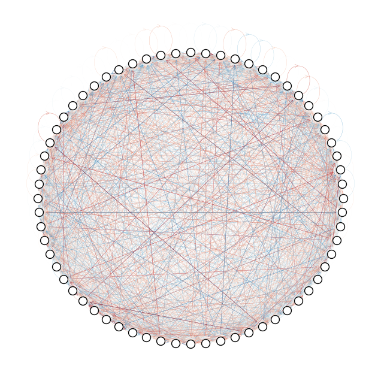
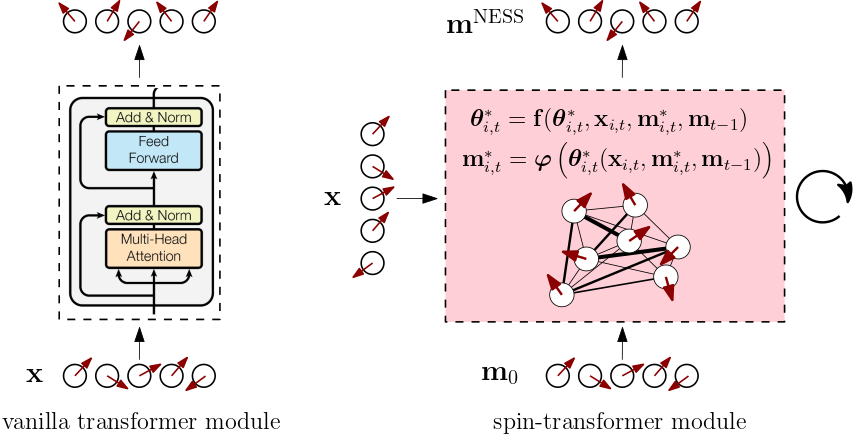
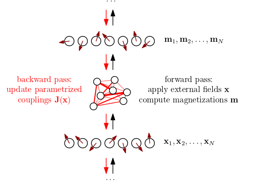

Spin-Model Transformers
A non-equilibrium statistical mechanics perspective on transformers

- Introduction
- Mean-field theory of asymmetric Ising models with binary spins
- Mean-field theory of asymmetric Ising models with vector spins
- Spin-transformer modules: a family of transformer-like modules
- Conclusion
- Appendices
- References
✨ TL;DR: We interpret and implement transformer modules as driven, disordered vector-spin models whose response behavior can be shaped by learning parameterized interactions, gradually steering a cascade of near-equilibrium steady-state magnetizations towards solving a given objective. Using dynamical mean-field theory, we show that a first-order approximation of the update equations for the magnetizations reproduces residual and attention terms. Going to second-order adds explicit expressions for feed-forward-like correction terms that are fully determined by the mean-field structure of the underlying spin model. By blending ideas from deep learning and statistical mechanics, we hope our work can help open up broader interdisciplinary bridges to improve our understanding of learning and generalization in transformer neural networks.
1. Introduction
✨ GitHub repository:
mcbal/spin-model-transformers
In a series of previous blog posts, we have tried to connect the forward pass of a transformer neural-network module to computing mean magnetizations in disordered Ising-like vector-spin models with parameterized couplings and external magnetic fields. According to this perspective, the forward pass of a transformer module can be understood as computing statistical observables given a specific realization of quenched couplings and external magnetic fields while the backward pass nudges the parameterized couplings and external magnetic fields. Physically, the transformer module represents an interacting many-body system modulating its behavior by learning to respond to being probed and driven in all kinds of ways.
However, both the mean-field message-passing approach of Deep Implicit Attention: A Mean-Field Theory Perspective on Attention Mechanisms (2021) and the saddle-point free-energy approach of Transformers from Spin Models: Approximate Free Energy Minimization (2021) inherently rely on methods that are only well-defined for spin models with symmetric coupling matrices, whose stochastic dynamics obey detailed balance and converge to a steady-state equilibrium characterized by the Boltzmann distribution. The softmax attention matrix in transformers is famously asymmetric though, so we had better come up with a more convincing approach to establish a correspondence.
To capture spin models with asymmetric coupling matrices, we turn to non-equilibrium spin systems, whose dynamics can be pretty wild yet gentle enough to support regimes where relaxation to a non-equilibrium or near-equilibrium steady state can occur. In the past few decades, dynamical mean-field approaches have been developed for the binary kinetic Ising model, which exhibits non-equilibrium behavior for asymmetric couplings or when parameters are subject to rapid changes.
In this post, we generalize a particular dynamical mean-field approach from binary spins to vector spins and relate the resulting mean-field update equations for the magnetizations to the forward pass of a transformer module. We find that the spin-model structure is rich enough for the update equations to yield residual connections, attention terms, and feed-forward correction terms, motivating a family of physics-inspired transformers.
2. Mean-field theory of asymmetric Ising models with binary spins
In this preliminary section, we review known results on mean-field theory approaches capturing the stochastic dynamics of binary kinetic Ising models. Readers familiar with this framework can skip ahead to Section 3 where we develop a generalization to vector spins. We primarily follow the discussion outlined in A unifying framework for mean-field theories of asymmetric kinetic Ising systems (Aguilera et al., 2021). At the end of the section, we implement the mean-field update equations for the mean magnetizations in JAX and run a few numerical experiments.
2.1. Setting the scene: the kinetic Ising model

We consider a kinetic Ising model describing a system made up of $N$ interacting binary spins $s_{i,t} \in \{-1, 1\}$ that evolve in discrete time steps $t$ according to synchronous dynamics, i.e. all spins get updated at the same time in parallel. Given a configuration $\mathbf{s}_{t-1} = \{ s_{1,t-1}, s_{2,t-1}, \ldots, s_{N,t-1} \}$ at time $t-1$, we consider the spins $\mathbf{s}_{t}$ at time $t$ to be conditionally independent random variables captured by a discrete-time Markov chain transition probability
\begin{equation} P( \mathbf{s}_{t} \vert \mathbf{s}_{t-1} ) = \prod_{i=1}^{N} \frac{\mathrm{e}^{s_{i,t} h_{i,t}}}{\sum_{s_{i,t}} \mathrm{e}^{s_{i,t} h_{i,t}}} = \prod_{i=1}^{N} \frac{\mathrm{e}^{s_{i,t} h_{i,t}}}{2 \cosh h_{i,t}}, \label{eq:pcond} \end{equation}
where the effective external field is given by
\begin{equation} h_{i,t} = x_{i,t} + \sum_{j=1}^{N} J_{ij} s_{j,t-1}. \end{equation}
Here, the parameters $\mathbf{x}$ represent the (possibly time-dependent) local external fields at each site while the coupling parameters $\mathbf{J}$ are a specific realization of quenched disorder encoding the interactions between pairs of spins. Using the probability mass function of the previous state $P( \mathbf{s}_{t-1} )$ we can write the distribution of the current state as
\begin{equation} P( \mathbf{s}_{t} ) = \sum_{\mathbf{s}_{t-1}} P( \mathbf{s}_{t} \vert \mathbf{s}_{t-1} ) P( \mathbf{s}_{t-1} ), \label{eq:marginal} \end{equation}
which, when applied recursively, traces the evolution of the system starting from some initial distribution $P( \mathbf{s}_{0} )$. Unless we turn off the couplings by setting $\mathbf{J} = \mathbf{0}$, the marginal distribution $P( \mathbf{s}_{t} )$ is not factorized and tends to be quite complicated. Our goal is to compute statistical properties of the system, such as the mean magnetizations
\begin{equation} m_{i,t} = \sum_{\mathbf{s}_{t}} s_{i,t} P( \mathbf{s}_{t} ), \end{equation}
as well as correlations
\begin{equation} C_{ik,t} = \sum_{\mathbf{s}_{t}} s_{i,t} s_{k,t} P( \mathbf{s}_{t} ) - m_{i,t} m_{k,t}, \end{equation}
and delayed correlations
\begin{equation} D_{il,t} = \sum_{\mathbf{s}_{t},\mathbf{s}_{t-1}} s_{i,t} s_{l,t-1} P( \mathbf{s}_{t}, \mathbf{s}_{t-1} ) - m_{i,t} m_{l,t-1}. \end{equation}
Since the above expressions involve summing over a large amount of possible spin configurations, they are not very useful in practice. So we will try to approximate the tricky marginal distribution $P( \mathbf{s}_{t} )$ defined in Eq. \eqref{eq:marginal} using a mean-field theory approach.
2.2. Mean-field theory and Kullback-Leibler divergence
Mean-field theory tries to approximate a complicated object ${\color{red}P}$ by wiggling around the parameters of a simple, analytically tractable parameterized ansatz ${\color{green}Q_{\theta}}$ to get as close as possible to ${\color{red}P}$. At risk of inducing headaches in mathematicians by calling everything a manifold, we can picture what is going on geometrically as trying to approximate a target probability distribution $P( \mathbf{s}_{t} \vert \mathbf{x}, \mathbf{J})$ and its statistical properties $\mathbf{m}_{t}$, $\mathbf{C}_{t}$, and $\mathbf{D}_{t}$ by restricting ourselves to a submanifold of tractable probability distributions. A particularly convenient submanifold is that of factorized models, where each point on the submanifold corresponds to a distribution parameterized by a vector $\boldsymbol{\theta}_{t}$,
\begin{equation} Q( \mathbf{s}_{t} \vert \boldsymbol{\theta}_{t} ) = \prod_{i=1}^{N} \frac{\mathrm{e}^{s_{i,t} \theta_{i,t}}}{2 \cosh \theta_{i,t}}, \label{eq:q} \end{equation}
so that the mean magnetizations are simply given by
\begin{equation} m_{i,t} = \tanh \theta_{i,t} \label{eq:meanmagstanh} \end{equation}
as there are no couplings between spins. The factorized model $Q( \mathbf{s}_{t} \vert \boldsymbol{\theta}^{*}_{t} )$ that minimizes the Kullback-Leibler (KL) divergence
\begin{equation} D_{\mathrm{KL}} ({\color{red}P}\vert\vert{\color{green}Q_{\theta}}) = \sum_{\mathbf{s}_{t}} P( \mathbf{s}_{t}) \log \frac{P( \mathbf{s}_{t})}{Q_{\theta}( \mathbf{s}_{t})} \label{eq:kl} \end{equation}
has mean magnetizations $\mathbf{m}_{t}$ identical to those of the target distribution $P( \mathbf{s}_{t})$ since, for all spins $i=1,2,\ldots,N$, we find that
\begin{align} \frac{\partial D_{\mathrm{KL}} ({\color{red}P}\vert\vert{\color{green}Q_{\theta}}) }{\partial \theta_{i, t}} \Biggr\rvert_{\boldsymbol{\theta}_{t}=\boldsymbol{\theta}^{*}_{t}} &= - \sum_{\mathbf{s}_{t}} P( \mathbf{s}_{t}) \frac{\partial \log Q_{\theta}( \mathbf{s}_{t}) }{\partial \theta_{i, t}} \Biggr\rvert_{\boldsymbol{\theta}_{t}=\boldsymbol{\theta}^{*}_{t}} \\ &= - \sum_{\mathbf{s}_{t}} s_{i,t} P( \mathbf{s}_{t}) + \tanh \theta^{*}_{i,t} \\ &= -m^{{\color{red}P}}_{i,t} + m^{{\color{green}Q_{\theta^{*}}}}_{i,t} = 0, \label{eq:klm} \end{align}
where $m^{{\color{red}P}}_{i,t}$ and $m^{{\color{green}Q_{\theta^{*}}}}_{i,t}$ respectively denote the expectation values of $s_{i,t}$ with respect to ${\color{red}P}$ and ${\color{green}Q_{\theta^{*}}}$. Indeed, minimizing $D_{\mathrm{KL}} ({\color{red}P}\vert\vert{\color{green}Q_{\theta}})$ tries to cover the modes of ${\color{red}P}$ by moment matching since the expectation value in Eq. \eqref{eq:kl} is calculated with respect to ${\color{red}P}$.
2.3. The Plefka expansion: interpolating distributions
Great, but is it even possible to find the parameters
\begin{equation} \DeclareMathOperator*{\argmin}{arg\,min} \boldsymbol{\theta}^{*}_{t} = \argmin_{\boldsymbol{\theta}_{t}} \left( - \sum_{\mathbf{s}_{t}} P( \mathbf{s}_{t}) \log Q_{\theta}( \mathbf{s}_{t}) \right) \end{equation}
that minimize the KL divergence? Well, that’s going to be hard, unless you already know the target distribution $P( \mathbf{s}_{t})$, or you have a clever way of approximately evaluating the expectation value of $\log {\color{green}Q_{\theta}}$ with respect to ${\color{red}P}$. So let us introduce some more distributions to get around this issue. To apply the Plefka expansion to our problem, we introduce the conditional distribution
\begin{equation} P_{\alpha}( \mathbf{s}_{t}\vert \mathbf{s}_{t-1} ) = \prod_{i=1}^{N} \frac{\mathrm{e}^{s_{i,t} h_{i,t}(\alpha) }}{2 \cosh h_{i,t}(\alpha)}, \label{eq:pcondalt} \end{equation}
\begin{equation} h_{i,t}(\alpha) = (1-\alpha) \theta_{i,t} + \alpha \left( x_{i,t} + \sum_{j=1}^{N} J_{ij} s_{j,t-1} \right), \label{eq:pcondalth} \end{equation}
parameterized by a scalar $\alpha$ interpolating between $P_{\alpha=0}( \mathbf{s}_{t} \vert \mathbf{s}_{t-1} ) = Q( \mathbf{s}_{t} \vert \boldsymbol{\theta}_{t} )$ (Eq. \eqref{eq:q}) and $P_{\alpha=1}( \mathbf{s}_{t} \vert \mathbf{s}_{t-1} ) = P( \mathbf{s}_{t} \vert \mathbf{s}_{t-1} )$ (Eq. \eqref{eq:pcond}). Using Eq. \eqref{eq:pcondalt}, we can construct an approximate marginal distribution $P_{\alpha}( \mathbf{s}_{t})$, leading to $\alpha$-dependent statistical properties $\mathbf{m}_{t}(\alpha)$, $\mathbf{C}_{t}(\alpha)$, and $\mathbf{D}_{t}(\alpha)$ for the approximate system. The Plefka expansion then boils down to writing these properties as Taylor series expansions around the factorized model $\alpha=0$. For the mean magnetizations, the expansion up to $n$-th order looks like
\begin{equation} \mathbf{m}_{t}(\alpha) = \mathbf{m}_{t}(\alpha=0) + \sum_{k=1}^{n} \frac{\alpha^k}{k!} \frac{\partial^{k} \mathbf{m}_{t}(\alpha=0)}{\partial \alpha^{k}} + \mathcal{O}(\alpha^{n+1}), \label{eq:mtaylor} \end{equation}
where all coefficients in the expansion are functions of $\boldsymbol{\theta}_{t}$ via Eq. \eqref{eq:pcondalth}. The mean-field approximation is computed by setting $\alpha=1$ so that the original marginal distribution is recovered and Eq. \eqref{eq:klm} holds, which implies that $\mathbf{m}_{t}(\alpha=1) = \mathbf{m}_{t}(\alpha=0)$ and thus
\begin{equation} \sum_{k=1}^{n} \frac{1}{k!} \frac{\partial^{k} \mathbf{m}_{t}(\alpha=0)}{\partial \alpha^{k}} + \mathcal{O}(\alpha^{n+1}) = 0. \label{eq:mftheta} \end{equation}
Finally, we solve Eq. \eqref{eq:mftheta} for $\boldsymbol{\theta}_{t}$ to find the mean-field values $\boldsymbol{\theta}^{*}_{t}$ of the parameters of the distribution Eq. \eqref{eq:q}. Physically, we are tuning the effective external magnetic fields of the factorized ansatz to $\boldsymbol{\theta}^{*}_{t}$ so that its approximate mean magnetizations get as close as possible to the true ones.
2.4. Naive mean-field and Thouless-Anderson-Palmer approximations
We now consider first and second order approximations of the mean magnetizations Eq. \eqref{eq:mtaylor} to recover respectively the naive mean-field and Thouless-Anderson-Palmer (TAP) approximations for the binary kinetic Ising model. The starting point is a Plefka expansion around factorized models at times $t-1$ and $t$. From Eq. \eqref{eq:marginal} and Eq. \eqref{eq:pcondalt}, we construct a marginal probability distribution
\begin{equation} P^{[t-1:t]}_{\alpha}( \mathbf{s}_{t} ) = \sum_{\mathbf{s}_{t-1},\mathbf{s}_{t-2}} P_{\alpha}( \mathbf{s}_{t} \vert \mathbf{s}_{t-1} ) P_{\alpha}( \mathbf{s}_{t-1} \vert \mathbf{s}_{t-2} ) P( \mathbf{s}_{t-2} ), \end{equation}
interpolating between $P^{[t-1:t]}_{\alpha=0}( \mathbf{s}_{t} ) = Q( \mathbf{s}_{t} )$ and $P^{[t-1:t]}_{\alpha=1}( \mathbf{s}_{t} ) = P( \mathbf{s}_{t} )$. The corresponding mean magnetizations are
\begin{align} m_{i,t}(\alpha) &= \sum_{\mathbf{s}_{t},\mathbf{s}_{t-1},\mathbf{s}_{t-2}} s_{i,t} \, P_{\alpha}( \mathbf{s}_{t} \vert \mathbf{s}_{t-1} ) P_{\alpha}( \mathbf{s}_{t-1} \vert \mathbf{s}_{t-2} ) P( \mathbf{s}_{t-2} ) \\ &= \sum_{\mathbf{s}_{t-1},\mathbf{s}_{t-2}} \tanh h_{i,t}(\alpha) \, P_{\alpha}( \mathbf{s}_{t-1} \vert \mathbf{s}_{t-2} ) P( \mathbf{s}_{t-2} ) \end{align}
Following Eq. \eqref{eq:mftheta}, the first-order approximation should satisfy
\begin{equation} \frac{\partial m_{i,t}(\alpha=0)}{\partial\alpha} = \left( 1-m^{2}_{i,t} \right) \left( -\theta_{i,t} + x_{i,t} + \sum_{j} J_{ij} m_{j,t-1} \right) = 0, \end{equation}
so that $\theta^{*}_{i,t} = x_{i,t} + \sum_{j} J_{ij} m_{j,t-1}$ and we end up with the naive mean-field equations:
\begin{equation} \boxed{m_{i,t} = \tanh \left( x_{i,t} + \sum_{j} J_{ij} m_{j,t-1} \right)} \label{eq:naivem} \end{equation}
Again following Eq. \eqref{eq:mftheta}, the second-order approximation should satisfy
\begin{equation} \frac{\partial m_{i,t}(\alpha=0)}{\partial\alpha} + \frac{1}{2} \frac{\partial^{2} m_{i,t}(\alpha=0)}{\partial\alpha^2} = 0, \end{equation}
where the second-order derivative, neglecting terms higher than $\mathcal{O}(\alpha^2)$, is
\begin{equation} \frac{\partial^{2} m_{i,t}(\alpha=0)}{\partial\alpha^2} \approx -2 m_{i,t} \left( 1-m^{2}_{i,t} \right) \sum_{j} J^{2}_{ij} \left( 1-m^{2}_{j,t-1} \right) \end{equation}
so that
\begin{equation} \theta^{*}_{i,t} = x_{i,t} + \sum_{j} J_{ij} m_{j,t-1} - m_{i,t} \sum_{j} J^{2}_{ij} \left( 1-m^{2}_{j,t-1} \right) \end{equation}
and we end up with the TAP mean-field equations:
\begin{equation} \boxed{m_{i,t} = \tanh \left( x_{i,t} + \sum_{j} J_{ij} m_{j,t-1} - m_{i,t} \sum_{j} J^{2}_{ij} \left( 1-m^{2}_{j,t-1} \right) \right)} \label{eq:tapm} \end{equation}
which includes the so-called Onsager correction term. The mean-field equations obtained above can also be elegantly derived using a Legendre transformation of the generating functional of the set of trajectories of the model, as outlined in e.g. Dynamical TAP equations for non-equilibrium Ising spin glasses (2011). We can also derive second-order TAP approximations of the correlations
\begin{equation} C_{ik,t} = \begin{cases} 1 - m^{2}_{i,t} & i = k \\ \left( 1-m^{2}_{i,t} \right) \left( 1-m^{2}_{k,t} \right) \sum_{j} J_{ij} J_{kj} \left( 1-m^{2}_{j,t-1} \right) & i \neq k \label{eq:tapc} \end{cases} \end{equation}
and delayed correlations
\begin{equation} D_{il,t} = J_{il} \left( 1-m^{2}_{i,t} \right) \left( 1-m^{2}_{l,t-1} \right) \left( 1 + 2 J_{il} m_{i,t} m_{l,t-1} \right). \label{eq:tapd} \end{equation}
We refer to (Aguilera et al., 2020) for full derivations of the above mean-field results as well as variations based on different approximations of the marginal distribution $P( \mathbf{s}_{t} )$.
In summary, given the mean magnetizations $\mathbf{m}_{t-1}$ of the system at time $t-1$, we can use equations \eqref{eq:tapm} \eqref{eq:tapc} \eqref{eq:tapd} to compute a tuple $(\mathbf{m}_{t},\mathbf{C}_{t},\mathbf{D}_{t})$ of approximate statistical properties of the system at time $t$. The time evolution of the system can be captured at the mean-field level by recursively computing $\mathbf{m}_{t}$ starting from an initial state $\mathbf{m}_{0}$ (with approximation errors likely accumulating over the course of the time evolution).
2.5. A simple JAX implementation
✨ GitHub repository:
mcbal/spin-model-transformers
To get more insight into what is going on, let us turn the mean-field update equations \eqref{eq:naivem} and \eqref{eq:tapm} for the mean magnetizations into code. But before we show a few plots, we need to know a bit more background about the model we are about to simulate. In (Aguilera et al., 2020), the authors derive a solution of the asymmetric version of the kinetic Sherrington-Kirkpatrick mean-field spin-glass model using a generating functional or dynamical partition function approach to capture the distribution of trajectories. They consider the same kinetic Ising model as in Eq. \eqref{eq:pcond} but with an inverse temperature parameter $\beta$ in the exponentials:
\begin{equation} P( \mathbf{s}_{t} \vert \mathbf{s}_{t-1} ) = \prod_{i=1}^{N} \frac{\mathrm{e}^{\beta s_{i,t} h_{i,t}}}{2 \cosh \beta h_{i,t}}. \label{eq:pcondwithbeta} \end{equation}
For Gaussian couplings $J_{ij} \sim \mathcal{N}\left( J_{\mu} / N, J^{2}_{\sigma} / N\right)$ and uniformly distributed external magnetic fields $x_{i} \sim \mathcal{U}(-X_{0}, X_{0})$, they show the existence of a ferromagnetic phase transition. In particular for $X_{0}=0.5$, $J_{\mu}=1.0$, and $J_{\sigma}=0.1$, a phase transition happens when tuning $\beta$ to a critical value $\beta_{c} \approx 1.1108$.
Simulating magnetization trajectories
We first present a JAX implementation of the mean-field time evolution of the magnetizations according to the model described above. We use jax.lax.scan to implement the time evolution and jax.vmap to parallelize trajectories starting from a batch of initial magnetization configurations $\mathbf{m}_{0}$. For the second-order TAP equations, jaxopt’s Anderson acceleration is used to find the fixed point magnetizations $\mathbf{m}_{t}$ given $\mathbf{m}_{t-1}$.
from functools import partial
import jax
import jax.numpy as jnp
from jaxopt import AndersonAcceleration
def update_naive_mf(m0, _, x, J):
"""See Eq. (22)."""
m1 = jnp.tanh(x + jnp.einsum("i j, j -> i", J, m0))
return m1, m0
def update_tap_mf(m0, _, x, J):
"""See Eq. (26)."""
def tap(m, _m0, _x, _J):
return jnp.tanh(
_x
+ jnp.einsum("i j, j -> i", _J, _m0)
- m * jnp.einsum("i j, j -> i", _J**2, (1.0 - _m0**2))
)
m1 = (
AndersonAcceleration(fixed_point_fun=tap, tol=1e-3, maxiter=10)
.run(m0, m0, x, J)
.params
)
return m1, m0
def time_evolution(m0, steps, update_fun):
final_carry, stacked_outputs = jax.lax.scan(update_fun, init=m0, xs=steps)
return final_carry, stacked_outputs
def init_params(key, N, beta, X0, J_mu, J_sigma):
x_key, J_key = jax.random.split(key)
x = jax.random.uniform(x_key, shape=(N,), minval=-beta * X0, maxval=beta * X0)
J = beta * J_mu * N**-1 + beta * J_sigma * N**-0.5 * jax.random.normal(
J_key, shape=(N, N)
)
return x, J
def simulate(
key, m0, steps, beta, X0=0.5, J_mu=1.0, J_sigma=0.1, update_fun=update_tap_mf
):
x, J = init_params(key, m0.shape[-1], beta, X0, J_mu, J_sigma)
wrapped_time_evolution = partial(
time_evolution,
steps=steps,
update_fun=partial(update_fun, x=x, J=J),
)
final_carry, stacked_outputs = jax.vmap(wrapped_time_evolution)(m0)
return final_carry, stacked_outputs
Naive mean-field vs. Thouless-Anderson-Palmer (TAP)
We fix the seed and randomly initialize model parameters $\mathbf{x}$ and $\mathbf{J}$ to simulate $N=512$ spins at the critical temperature $\beta_{c}$ for $t=128$ time steps starting from an all-ones initial state. We first consider the naive mean-field update step.

The left axis shows the individual magnetization trajectories for each spin plotted horizontally while the red line associated to the right axis describes the average of the magnetizations across all spins for each time step. We observe convergence to what looks like a non-equilibrium / near-equilibrium steady state (NESS).

Comparing the naive first-order mean-field update equations to the second-order Thouless-Anderson-Palmer (TAP) ones, we observe lower values for the mean magnetization across all spins, which (Aguilera et al., 2020) showed to be closer to ground truth values (not shown) obtained via sampling and averaging spin configurations.
Sampling trajectories
Let us consider 100 randomly-initialized initial states and simulate their associated trajectories in three different model regimes: below the critical point ($\beta=\beta_c / 2 $), at the critical point ($\beta=\beta_c$), and above the critical point ($\beta=2 \beta_c$).

We observe that the trajectories of randomly-initialized initial states converge to identical final states in each regime. These final states map to a simple ferromagnetic Ising phase diagram, where a high-temperature disordered phase $\langle m_{i,t} \rangle \to 0$ (left) is separated from a low-temperature locally-ordered phase $\langle m_{i,t} \rangle \to \pm 1$ (right) by a critical point (center). The behavior around $\beta=\beta_{c}$ is pretty interesting: the non-trivial steady state looks like an attractor implicitly encoded in the dynamics of the model. If we were to parameterize the couplings, we could train the system to act as an associative memory.
Sampling model parameters
We now go back to considering just a single trajectory since we just saw that trajectories seem to converge to the same final steady-state magnetizations for fixed model parameters. To get a feel for the variation of these values across different realizations of model parameters, we plot the absolute value1 $| \langle m_{i} \rangle |$ of the final steady-state magnetizations across 100 samples of model parameters and a range of inverse temperatures. We are using JAX, so we can easily sample model parameters by vmap‘ing the random key fed into the simulate function followed by another vmap to sweep across $\beta$.

Every curve in the above plot describes the final steady-state value of the “order parameter” $| \langle m_{i} \rangle |$ for a fixed set of model parameters sweeping across $\beta$. We observe a greater spread of values near the critical point and hence an improved capacity to map input external fields to a range of output magnetizations. If we were to let the number of spins $N \to \infty$ and average over a large number of model parameter samples, the finite-size results above would probably transform into a sharp curve with zero magnetization below the critical point and a sudden non-zero magnetization emerging at the critical point.
3. Mean-field theory of asymmetric Ising models with vector spins
We now transpose the binary-spin results of the previous section to a setting where local spin degrees of freedom are $D$-dimensional vector spins restricted to wiggle around on $(D-1)$-dimensional spheres. We start by generalizing the conditional distribution Eq. \eqref{eq:pcondalt} to vector spins. Next, we motivate the limit of large vector dimension and derive first-order and second-order mean-field update equations for the mean magnetizations. We finish this section with a JAX implementation and some toy numerical experiments.
3.1. Vector spins: distributions on hyperspheres

A vector-spin equivalent of Eq. \eqref{eq:pcondalt} looks something like
\begin{equation} P_{\alpha}( \mathbf{s}_{t} \vert \mathbf{s}_{t-1} ) = \prod_{i=1}^{N} \frac{\mathrm{e}^{\beta \, \mathbf{s}_{i,t} \cdot \mathbf{h}_{i,t}(\alpha)}}{\int_{S_{D-1}} \mathrm{d}^{D} \mathbf{s}_{i,t} \; \mathrm{e}^{\beta \, \mathbf{s}_{i,t} \cdot \mathbf{h}_{i,t}(\alpha)} }, \label{eq:pcondaltvector} \end{equation}
where we immediately included an inverse temperature $\beta$ like in Eq. \eqref{eq:pcondwithbeta}. A vector-spin equivalent of Eq. \eqref{eq:pcondalth} is
\begin{equation} \mathbf{h}_{i,t}(\alpha) = (1-\alpha) \boldsymbol{\theta}_{i,t} + \alpha \left( \mathbf{x}_{i,t} + \sum_{j=1}^{N} J_{ij} \mathbf{s}_{j,t-1} \right) \equiv \boldsymbol{\theta}_{i,t} + \alpha \Delta \mathbf{h}_{i,t}, \label{eq:pcondalthvector} \end{equation}
where $S_{D-1}(R) = \{ x \in \mathbb{R}^{D} : \lVert x \rVert = R \}$ denotes the $(D-1)$-dimensional sphere with radius $R$ embedded in $D$ dimensions. Let us focus on the distribution for a single site and drop all subscripts and dependencies for clarity:
\begin{equation} p ( \mathbf{s} ; \beta, \mathbf{h}) = \frac{\mathrm{e}^{\beta \, \mathbf{s} \cdot \mathbf{h}}}{\int_{S_{D-1}} \mathrm{d}^{D} \mathbf{s} \; \mathrm{e}^{\beta \, \mathbf{s} \cdot \mathbf{h}} }. \label{eq:pcondsinglesitevector} \end{equation}
The normalization constant in the denominator can be shown to be (see Appendix A.1)
\begin{equation} \int_{S_{D-1}} \mathrm{d}^{D} \mathbf{s} \; \mathrm{e}^{\beta \, \mathbf{s} \cdot \mathbf{h}} = \frac{ \left( 2 \pi R \right)^{D/2} I_{D/2 - 1}(\beta R \lVert \mathbf{h}\rVert) }{ \left(\beta \lVert \mathbf{h}\rVert\right)^{D/2-1} } \equiv Z(\beta, R, \lVert \mathbf{h}\rVert) \label{eq:partfun} \end{equation}
where $I_{\nu}(z)$ denotes the modified Bessel function of the first kind and $\lVert \mathbf{h} \rVert = \sqrt{\mathbf{h} \cdot \mathbf{h}}$. Physically, we can think of this single-site distribution as measuring dot-product alignment to an effective external magnetic field $\mathbf{h}$ at inverse temperature $\beta$.
If we consider spins living on the unit sphere $R=1$ as well as unit vectors $\mathbf{h}$, the distribution boils down to a von Mises–Fisher distribution with mean direction $\boldsymbol{\mu} \equiv \mathbf{h}$ and concentration parameter $\kappa \equiv \beta$. This distribution is unimodal for $\kappa > 0$ and can be derived from restricting an isotropic multivariate Gaussian to the unit hypersphere. The greater the value of $\kappa$ (the inverse temperature $\beta$), the higher the concentration of the distribution around the mean direction $\boldsymbol{\mu}$ (the more the spin tends to align to the effective external field $\mathbf{h}$). Though instead of a fixed parameter $\boldsymbol{\mu}$, we have a very funky parameter Eq. \eqref{eq:pcondalthvector} that depends on all other spins to spice things up.
3.2. Magnetizations and limit of large vector dimension
Before we derive mean-field approximations for the mean magnetizations of our vector-spin system, let us first consider the decoupled $\alpha \to 0$ limit of the distribution Eq. \eqref{eq:pcondaltvector},
\begin{equation} Q( \mathbf{s}_{t} \vert \boldsymbol{\theta}_{t} ) = \prod_{i=1}^{N} \frac{\mathrm{e}^{\beta \, \mathbf{s}_{i,t} \cdot \boldsymbol{\theta}_{i,t}}}{Z_{i,t}\left(\beta, R, \lVert \boldsymbol{\theta}_{i,t} \rVert\right)}, \end{equation}
and find an expression for its mean magnetizations. For every decoupled site, the mean magnetization can be shown to be (see Appendix A.2)
\begin{equation} \mathbf{m}_{i,t} = \frac{I_{D/2}(\beta R \lVert \boldsymbol{\theta}_{i,t} \rVert)}{I_{D/2 - 1}(\beta R \lVert \boldsymbol{\theta}_{i,t} \rVert)} \frac{R \boldsymbol{\theta}_{i,t}}{\lVert \boldsymbol{\theta}_{i,t} \rVert} \equiv \boldsymbol{\varphi} \left(\boldsymbol{\theta}_{i,t}\right), \label{eq:meanmagsbessels} \end{equation}
which plays the role of $m_{i,t} = \tanh \theta_{i,t}$ in the binary setting, see Eq. \eqref{eq:meanmagstanh}. Looking ahead at turning the above equation into code, we note that there exist efficient algorithms to compute the ratio of modified Bessel functions of the first kind. We implement a fast JAX version in Appendix A.4 and show numerically how the ratio flattens out quickly for large values of the order $\nu = D/2 -1$, motivating some kind of large-order expansion.
Remember that our goal is to make a connection to transformer neural networks. Since the vector dimension in dense transformer modules tends be somewhere between $\mathcal{O}(10^2)$ and $\mathcal{O}(10^5)$, it is not nonsensical to focus on the large vector dimension limit. A relevant uniform asymptotic expansion of the ratio of modified Bessel functions of the first kind is (Kiefer & Weiss, 1972):
\begin{align} \frac{I_{\nu+\alpha}(\nu x)}{I_{\nu}(\nu x)} = \left( \frac{x}{1+\sqrt{1+x^2}} \right)^{\alpha} \left( 1 - \frac{1+\alpha\sqrt{1+x^2}}{2(1+x^2)} \frac{\alpha}{\nu} + \mathcal{O}\left( \frac{1}{\nu^2} \right) \right) \end{align}
Indeed, if we choose to tie the radius $R$ of our little spins to their vector dimension $D$ via
\begin{align} \nu=D/2-1=R^2, \end{align}
we can apply the leading order of the asymptotic expansion for $\alpha=1$ to \eqref{eq:meanmagsbessels} to find
\begin{equation} \mathbf{m}^{D \to \infty}_{i,t} \approx \frac{\beta}{1+\gamma( \lVert \boldsymbol{\theta}_{i,t} \rVert )} \boldsymbol{\theta}_{i,t} \equiv \boldsymbol{\varphi}^{D \to \infty} \left(\boldsymbol{\theta}_{i,t}\right). \label{eq:largedevmag} \end{equation}
where
\begin{align} \gamma \left(\lVert \boldsymbol{\theta}_{i,t} \rVert\right) = \sqrt{1+\beta^2 \lVert \boldsymbol{\theta}_{i,t} \rVert^2 / R^2 }, \end{align}
From here on, we will default to using the large-$D$ approximation because keeping track of (derivatives of) Bessel functions gets boring real quick. We refer to Appendix A.5 for some truly outrageous expressions pertaining to the general case valid for all $D>1$.
3.3. First-order naive mean-field approximation
All right, let’s go. Closely mimicking the binary case, we start from the following approximated marginal probability distribution
\begin{equation} P^{[t-1:t]}_{\alpha}( \mathbf{s}_{t} ) = \int \mathrm{d} \mathbf{s}_{t-1} \int \mathrm{d} \mathbf{s}_{t-2} \; P_{\alpha}( \mathbf{s}_{t} \vert \mathbf{s}_{t-1} ) P_{\alpha}( \mathbf{s}_{t-1} \vert \mathbf{s}_{t-2} ) P( \mathbf{s}_{t-2} ), \end{equation}
interpolating between $P^{[t-1:t]}_{\alpha=0}( \mathbf{s}_{t} ) = Q( \mathbf{s}_{t} )$ and $P^{[t-1:t]}_{\alpha=1}( \mathbf{s}_{t} ) = P( \mathbf{s}_{t} )$. Our lazy integral notation $\int \mathrm{d} \mathbf{s}_{t}$ should be understood as $\int \prod_{i=1}^{N} \mathrm{d}^{D} \mathbf{s}_{i, t}$, i.e. integrating over all the little spins at a fixed time $t$. The estimated mean magnetizations are
\begin{align} \mathbf{m}_{i,t}(\alpha) &= \int \mathrm{d} \mathbf{s}_{t} \int \mathrm{d} \mathbf{s}_{t-1} \int \mathrm{d} \mathbf{s}_{t-2} \; \mathbf{s}_{i,t} P_{\alpha}( \mathbf{s}_{t} \vert \mathbf{s}_{t-1} ) P_{\alpha}( \mathbf{s}_{t-1} \vert \mathbf{s}_{t-2} ) P( \mathbf{s}_{t-2} ) \nonumber\\ &= \int \mathrm{d} \mathbf{s}_{t-1} \int \mathrm{d} \mathbf{s}_{t-2} \; \boldsymbol{\varphi} \left(\mathbf{h}_{i,t}(\alpha)\right) \, P_{\alpha}( \mathbf{s}_{t-1} \vert \mathbf{s}_{t-2} ) P( \mathbf{s}_{t-2} ). \end{align}
The first-order derivative with respect to $\alpha$ is then given by
\begin{align} \frac{\partial \mathbf{m}_{i,t}(\alpha)}{\partial\alpha} = \int &\mathrm{d} \mathbf{s}_{t-1} \int \mathrm{d} \mathbf{s}_{t-2} \Biggl( \frac{\partial\boldsymbol{\varphi} \left(\mathbf{h}_{i,t}(\alpha)\right)}{\partial\alpha} \, P_{\alpha}( \mathbf{s}_{t-1} \vert \mathbf{s}_{t-2} ) \nonumber\\ &+ \boldsymbol{\varphi} \left(\mathbf{h}_{i,t}(\alpha)\right) \, \frac{\partial P_{\alpha}( \mathbf{s}_{t-1} \vert \mathbf{s}_{t-2} )}{\partial\alpha} \Biggr) P( \mathbf{s}_{t-2} ), \label{eq:mitfirstorderalpha} \end{align}
where
\begin{align} \frac{\partial \boldsymbol{\varphi}(\mathbf{h}_{i,t}(\alpha))}{\partial\alpha} = \frac{\beta}{1+\gamma \left(\lVert \mathbf{h}_{i,t}(\alpha) \rVert\right)} \Delta \mathbf{h}_{i,t} - \frac{\beta}{R^2} \frac{ \left( \boldsymbol{\varphi}(\mathbf{h}_{i,t}(\alpha)) \cdot \Delta \mathbf{h}_{i,t} \right) }{ \gamma \left(\lVert \mathbf{h}_{i,t}(\alpha) \rVert\right) } \boldsymbol{\varphi}(\mathbf{h}_{i,t}(\alpha)) \label{eq:firstorderphialpha} \end{align}
Evaluating \eqref{eq:mitfirstorderalpha} at $\alpha=0$, the second term drops out because the first-order derivative of $P_{\alpha}( \mathbf{s}_{t-1} \vert \mathbf{s}_{t-2} )$ becomes independent of $\boldsymbol{\varphi} \left(\mathbf{h}_{i,t}(\alpha)\right)$ and $\int \mathrm{d} \mathbf{s}_{t-1} P_{\alpha}( \mathbf{s}_{t-1} \vert \mathbf{s}_{t-2} )=1$. We thus end up with
\begin{align} \frac{\partial \mathbf{m}_{i,t}(\alpha=0)}{\partial\alpha} = \frac{\beta}{1+\gamma \left(\lVert \boldsymbol{\theta}_{i,t} \rVert\right)}\boldsymbol{v}_{i,t} - \frac{\beta}{R^2}\frac{\left( \mathbf{m}_{i,t} \cdot \boldsymbol{v}_{i,t} \right)}{\gamma \left(\lVert \boldsymbol{\theta}_{i,t} \rVert\right)} \mathbf{m}_{i,t} \label{eq:mfirstorderalphazero} \end{align}
where
\begin{align} \boldsymbol{v}_{i,t} = -\boldsymbol{\theta}_{i,t} + \mathbf{x}_{i,t} + \sum_{j=1}^{N} J_{ij} \mathbf{m}_{j,t-1} \label{eq:vmf} \end{align}
captures the result of integrating $\Delta \mathbf{h}_{i,t}$ over the spins $\mathbf{s}_{t-1}$. Following Eq. \eqref{eq:mftheta}, the first-order approximation should satisfy
\begin{equation} \left[ \alpha \frac{\partial \mathbf{m}_{i,t}(\alpha=0)}{\partial\alpha} \right]_{\alpha=1} = \mathbf{0} + \left[ \mathcal{O}\left(\alpha^2\right)\right]_{\alpha=1},\label{eq:firstorderapproxreqs} \end{equation}
so that we are encouraged to set $\boldsymbol{v}_{i,t}=0$ and hence $\boldsymbol{\theta}^{*}_{i,t} = \mathbf{x}_{i,t} + \sum_{j} J_{ij} \mathbf{m}_{j,t-1}$, leading to the naive mean-field equations:
\begin{equation} \boxed{ \mathbf{m}_{i,t} = \frac{\beta \left( \mathbf{x}_{i,t} + \sum_{j} J_{ij} \mathbf{m}_{j,t-1} \right)}{1+\sqrt{1+\beta^2 \lVert \mathbf{x}_{i,t} + \sum_{j} J_{ij} \mathbf{m}_{j,t-1} \rVert^2 / R^2 }} } \label{eq:naivemvector} \end{equation}
Looking ahead at the transformer-module correspondence in Section 4, we squint our eyes and recognize a scaled sum of a residual connection and an attention term. No feed-forward terms though.
Before moving on to the second-order approximation, let us end this section with an interesting observation about Eq. \eqref{eq:mfirstorderalphazero}. In Appendix A.3, we show that the variance matrix of a single spin in the large-$D$ limit equals a rank-1 perturbation of a diagonal matrix
\begin{align} \mathrm{Var} [ \mathbf{s}_{i,t} ] &= \frac{\mathbb{1}}{1+\gamma \left(\lVert \mathbf{h}_{i,t}(\alpha) \rVert\right)} - \frac{ \boldsymbol{\varphi}(\mathbf{h}_{i,t}(\alpha)) \otimes \boldsymbol{\varphi}(\mathbf{h}_{i,t}(\alpha)) }{ R^2 \gamma \left(\lVert \mathbf{h}_{i,t}(\alpha) \rVert\right) }, \label{eq:spinvariance} \end{align}
Taking the $\alpha \to 0$ limit of the above expressions, we can reinterpret Eq. \eqref{eq:mfirstorderalphazero} as the matrix-vector multiplication of the decoupled spin’s variance matrix with $\boldsymbol{v}_{i,t}$,
\begin{align} \frac{\partial \mathbf{m}_{i,t}(\alpha=0)}{\partial\alpha} = \beta \mathrm{Var} [ \mathbf{s}_{i,t} ] \boldsymbol{v}_{i,t}. \end{align}
3.4. Second-order Thouless-Anderson-Palmer approximation
Let us now try to find out whether going to the second-order approximation spits out additional Onsager feed-forward like correction terms in the update equations for the magnetizations.
Again following Eq. \eqref{eq:mftheta}, the second-order approximation should satisfy
\begin{equation} \left[ \alpha \frac{\partial \mathbf{m}_{i,t}(\alpha=0)}{\partial\alpha} \right]_{\alpha=1} + \left[ \frac{\alpha^2}{2} \frac{\partial^{2} \mathbf{m}_{i,t}(\alpha=0)}{\partial\alpha^2}\right]_{\alpha=1} = \mathbf{0} + \left[ \mathcal{O}\left(\alpha^3\right)\right]_{\alpha=1}, \label{eq:secondorderconstraint} \end{equation}
where the second-order derivative is given by
\begin{align} \frac{\partial^{2} \mathbf{m}_{i,t}(\alpha)}{\partial\alpha^2} = \int &\mathrm{d} \mathbf{s}_{t-1} \int \mathrm{d} \mathbf{s}_{t-2} \Biggl( \frac{\partial^{2}\boldsymbol{\varphi} \left(\mathbf{h}_{i,t}(\alpha)\right)}{\partial\alpha^2} \, P_{\alpha}( \mathbf{s}_{t-1} \vert \mathbf{s}_{t-2} ) \nonumber\\ &+ 2\frac{\partial\boldsymbol{\varphi} \left(\mathbf{h}_{i,t}(\alpha)\right)}{\partial\alpha} \, \frac{\partial P_{\alpha}( \mathbf{s}_{t-1} \vert \mathbf{s}_{t-2} )}{\partial\alpha} \nonumber \\ &+ \boldsymbol{\varphi} \left(\mathbf{h}_{i,t}(\alpha)\right) \, \frac{\partial^{2} P_{\alpha}( \mathbf{s}_{t-1} \vert \mathbf{s}_{t-2} )}{\partial\alpha^2} \Biggr) P( \mathbf{s}_{t-2} ). \label{eq:mhasecordder} \end{align}
Evaluated at $\alpha=0$, the third term in the expression above will drop out because the derivative becomes independent of $\boldsymbol{\varphi} \left(\mathbf{h}_{i,t}(\alpha)\right)$ and $\int \mathrm{d} \mathbf{s}_{t-1} P_{\alpha}( \mathbf{s}_{t-1} \vert \mathbf{s}_{t-2} )=1$.
The first term in Eq. \eqref{eq:mhasecordder} can be shown to look something like
\begin{align} \frac{\partial^2 \boldsymbol{\varphi}(\mathbf{h}_{i,t}(\alpha))}{\partial\alpha^2} = & \frac{\beta^2}{R^4} \frac{ 1+\gamma_{i,t}(\alpha) }{ \gamma_{i,t}(\alpha)^3 } \left( \boldsymbol{\varphi}(\mathbf{h}_{i,t}(\alpha)) \cdot \Delta \mathbf{h}_{i,t} \right)^2 \boldsymbol{\varphi}(\mathbf{h}_{i,t}(\alpha)) \nonumber \\ &- \frac{\beta}{R^2} \frac{1}{\gamma_{i,t}(\alpha)} \left( \frac{\partial\boldsymbol{\varphi}(\mathbf{h}_{i,t}(\alpha))}{\partial\alpha} \cdot \Delta \mathbf{h}_{i,t} \right) \boldsymbol{\varphi}(\mathbf{h}_{i,t}(\alpha)) \nonumber \\ &- \frac{\beta}{R^2} \frac{1}{\gamma_{i,t}(\alpha)} \left( \boldsymbol{\varphi}(\mathbf{h}_{i,t}(\alpha)) \cdot \Delta \mathbf{h}_{i,t} \right) \frac{\partial\boldsymbol{\varphi}(\mathbf{h}_{i,t}(\alpha))}{\partial\alpha} \nonumber \\ &- \frac{\beta^2}{R^2} \frac{1}{\gamma_{i,t}(\alpha)^2 + \gamma_{i,t}(\alpha) } \left( \boldsymbol{\varphi}(\mathbf{h}_{i,t}(\alpha)) \cdot \Delta \mathbf{h}_{i,t} \right) \Delta \mathbf{h}_{i,t}, \end{align}
where
\begin{align} \gamma_{i,t} (\alpha) \equiv \gamma\left( \lVert \mathbf{h}_{i,t}(\alpha) \rVert \right) = \sqrt{1+\beta^2 \lVert \mathbf{h}_{i,t}(\alpha) \rVert^2 / R^2 }, \end{align}
which, after substituting the first-order derivative Eq. \eqref{eq:firstorderphialpha}, simplifies to
\begin{align} \frac{\partial^2 \boldsymbol{\varphi}(\mathbf{h}_{i,t}(\alpha))}{\partial\alpha^2} = & \frac{\beta^2}{R^4} \frac{ 1+3\gamma_{i,t}(\alpha) }{ \gamma_{i,t}(\alpha)^3 } \left( \boldsymbol{\varphi}(\mathbf{h}_{i,t}(\alpha)) \cdot \Delta \mathbf{h}_{i,t} \right)^2 \boldsymbol{\varphi}(\mathbf{h}_{i,t}(\alpha)) \nonumber \\ &- \frac{\beta^2}{R^2} \frac{1}{\gamma_{i,t}(\alpha)^2 + \gamma_{i,t}(\alpha)} \left( \Delta \mathbf{h}_{i,t} \cdot \Delta \mathbf{h}_{i,t} \right) \boldsymbol{\varphi}(\mathbf{h}_{i,t}(\alpha)) \nonumber \\ &- \frac{\beta^2}{R^2} \frac{2}{\gamma_{i,t}(\alpha)^2 + \gamma_{i,t}(\alpha)} \left( \boldsymbol{\varphi}(\mathbf{h}_{i,t}(\alpha)) \cdot \Delta \mathbf{h}_{i,t} \right) \Delta \mathbf{h}_{i,t} . \label{eq:secondorderphialpha} \end{align}
The second term in Eq. \eqref{eq:mhasecordder} contains non-vanishing contributions in the $\alpha \to 0$ limit coming from the $\sum_{j=1}^{N} J_{ij} \mathbf{s}_{j, t-1}$ terms in $\Delta \mathbf{h}_{i,t}$. One can show that the surviving terms in the integrand are proportional to
\begin{align} \sum_{j} J_{ij} \Biggl( &\frac{2 \beta^2}{1+\gamma_{i,t}(\alpha)} \frac{\partial\mathbf{m}_{j, t-1}(\alpha)}{\partial\alpha} \nonumber \\ &- \frac{2 \beta^2}{R^2 \gamma_{i,t}(\alpha)} \left( \boldsymbol{\varphi}(\mathbf{h}_{i,t}(\alpha)) \cdot \frac{\partial\mathbf{m}_{j, t-1}(\alpha)}{\partial\alpha} \right) \boldsymbol{\varphi}(\mathbf{h}_{i,t}(\alpha)) \Biggr), \end{align}
which we can ignore since they are $\mathcal{O}(\alpha)$ on their own, and thus $\mathcal{O}(\alpha^3)$ when multiplied with $\alpha^2$ in the second-order approximation.
Before taking the $\alpha \to 0$ limit of whatever is left in Eq. \eqref{eq:mhasecordder}, we list a few useful tricks to make the evaluation easier. First of all, we use Eq. \eqref{eq:vmf} to introduce the following sneaky substitution
\begin{align} \Delta \mathbf{h}_{i,t} = -\boldsymbol{\theta}_{i,t} + \mathbf{x}_{i,t} + \sum_{j=1}^{N} J_{ij} \mathbf{s}_{j,t-1} = \boldsymbol{v}_{i,t} + \sum_{j=1}^{N} J_{ij} \left( \mathbf{s}_{j,t-1} - \mathbf{m}_{j,t-1} \right), \end{align}
which conveniently separates terms with fluctuating spin variables from magnetizations that can be pulled out of the integrals. Secondly, all terms that contain only one spin variable with a dependence looking like $\mathbf{s}_{j,t-1} - \mathbf{m}_{j,t-1}$ drop out because, schematically,
\begin{align} \mathbf{s}_{j,t-1} - \mathbf{m}_{j,t-1} \overset{\int \mathrm{d} \mathbf{s}_{t-1}}{\to} \boldsymbol{\varphi}(\mathbf{h}_{j,t}(\alpha)) - \mathbf{m}_{j,t-1} \overset{\alpha \to 0}{\to} \mathbf{0}. \end{align}
Thirdly, since the $\alpha \to 0$ limit decouples all spins $\mathbf{s}_{t-1}$, any term containing dot products $(\mathbf{s}_{j,t-1}-\mathbf{m}_{j,t-1}) \cdot (\mathbf{s}_{k,t-1}-\mathbf{m}_{k,t-1})$ of two spin variables is zero for $j \neq k$ and equal to $R^2 - \mathbf{m}^2_{j,t-1}$ for $j=k$. We will also encounter terms containing (tensor contractions with) outer products $(\mathbf{s}_{j,t-1}-\mathbf{m}_{j,t-1}) \otimes (\mathbf{s}_{k,t-1}-\mathbf{m}_{k,t-1})$, which we can think of as projection operators. For $j \neq k$, these and similar terms again evaluate to zero, while, for $j=k$, we get the variance contributions we mentioned previously in Eq. \eqref{eq:spinvariance} at the end of the previous section.
Finally, we take the $\alpha \to 0$ limit of Eq. \eqref{eq:mhasecordder} only to end up with the following mess:
\begin{align} &\frac{\partial^{2} \mathbf{m}_{i,t}(\alpha=0)}{\partial\alpha^2} = \label{eq:secondordercorrections} \\ \end{align} \begin{align} &\hspace{-1em}\frac{\beta^2}{R^4} \frac{1+3\gamma_{i,t}(0)}{\gamma_{i,t}(0)^3} \left( \left( \mathbf{m}_{i,t} \cdot \mathbf{v}_{i,t} \right)^2 + \sum_{j} J_{ij}^2 \left( \frac{\mathbf{m}_{i,t}^2}{1+\gamma_{i,t-1}(0)} - \frac{\left(\mathbf{m}_{i,t}\cdot\mathbf{m}_{j,t-1}\right)^2}{R^2 \gamma_{i,t-1}(0)} \right) \right) \mathbf{m}_{i,t} \nonumber \\ &\hspace{-1em}- \frac{\beta^2}{R^2} \frac{1}{\gamma_{i,t}^2 (0) + \gamma_{i,t}(0)} \left( \mathbf{v}_{i,t}^2 + \sum_{j} J_{ij}^2 \left( R^2 - \mathbf{m}_{j,t-1}^2 \right) \right) \mathbf{m}_{i,t} \nonumber \\ &\hspace{-1em}- \frac{\beta^2}{R^2} \frac{2}{\gamma_{i,t}^2 (0) + \gamma_{i,t}(0)} \Biggr( \mathbf{v}_{i,t} \otimes \mathbf{v}_{i,t} + \sum_{j} J_{ij}^2 \left( \frac{\mathbb{1}}{1+\gamma_{i,t-1}(0)} - \frac{\mathbf{m}_{j,t-1}\otimes\mathbf{m}_{j,t-1}}{R^2 \gamma_{i,t-1}(0)} \right) \Biggr) \mathbf{m}_{i,t} \nonumber \end{align}
At this point, it is too late. We should have remembered that the second-order approximation lives in the neighborhood of the first-order approximation. We probably ended up doing too much work by taking terms into account that are of higher order in $\alpha$. We can always drop terms later on if it turns out they are neglible at $\mathcal{O}(\alpha^2)$.
To get to the second-order mean-field equations for the magnetizations, we have to solve Eq. \eqref{eq:secondorderconstraint} for the optimal parameters $\boldsymbol{\theta}^{*}_{i,t}$, i.e.,
\begin{equation} \frac{\partial \mathbf{m}_{i,t}(\alpha=0)}{\partial\alpha} + \frac{1}{2} \frac{\partial^{2} \mathbf{m}_{i,t}(\alpha=0)}{\partial\alpha^2} = \mathbf{0} + \mathcal{O}\left(\alpha^3\right). \end{equation}
Let us substitute $\frac{\partial \mathbf{m}_{i,t}(\alpha=0)}{\partial\alpha}$ from Eq. \eqref{eq:mfirstorderalphazero} but keep $\frac{\partial^{2} \mathbf{m}_{i,t}(\alpha=0)}{\partial\alpha^2}$ for generality,
\begin{align} \beta \left( \frac{\mathbb{1}}{1+\gamma_{i,t}(0)} - \frac{\mathbf{m}_{i,t}\otimes\mathbf{m}_{i,t}}{R^2 \gamma_{i,t}(0)} \right) \mathbf{v}_{i,t} + \frac{1}{2} \frac{\partial^{2} \mathbf{m}_{i,t}(\alpha=0)}{\partial\alpha^2} = \mathbf{0} + \mathcal{O}\left(\alpha^3\right), \end{align}
so that we can then isolate $\boldsymbol{\theta}_{i,t}$ in $\mathbf{v}_{i,t}$ to find
\begin{align} \boldsymbol{\theta}_{i,t} = \mathbf{x}_{i,t} &+ \sum_{j} J_{ij} \mathbf{m}_{j,t-1} \nonumber \\ &+ \frac{1+\gamma_{i,t}(0)}{2\beta} \left( \frac{\partial^{2} \mathbf{m}_{i,t}(\alpha=0)}{\partial\alpha^2} + \frac{\mathbf{m}_{i,t} \cdot \frac{\partial^{2} \mathbf{m}_{i,t}(\alpha=0)}{\partial\alpha^2}}{\frac{R^2 \gamma_{i,t}(0)}{1+\gamma_{i,t}(0)} - \mathbf{m}_{i,t}^2} \mathbf{m}_{i,t} \right),\label{eq:ftheta} \end{align}
where we have used the Sherman–Morrison formula to compute the inverse of the variance matrix. Since the expression on the right-hand side also depends on $\boldsymbol{\theta}_{i,t}$, we seem to have stumbled upon a set of fixed-point equations which we should solve for $\boldsymbol{\theta}^{*}_{i,t}$,
\begin{align} \boldsymbol{\theta}_{i,t} = \mathbf{f} (\boldsymbol{\theta}_{i,t}, \mathbf{x}_{i,t}, \mathbf{m}_{i,t}, \mathbf{m}_{t-1}), \label{eq:thetafp} \end{align}
where the function $\mathbf{f}$ is given by the right-hand side of Eq. \eqref{eq:ftheta}. The second-order mean-field equations then become yet another set of fixed-point equations
\begin{equation} \mathbf{m}_{i,t} = \boldsymbol{\varphi} \left(\boldsymbol{\theta}^{*}_{i,t}(\mathbf{x}_{i,t}, \mathbf{m}_{i,t}, \mathbf{m}_{t-1})\right) \end{equation}
because of the dependence of $\boldsymbol{\theta}^{*}_{i,t}$ on $\mathbf{m}_{i,t}$. Similar to the binary TAP approximation Eq. \eqref{eq:tapm}, this dependency suggests that we should solve for fixed-point magnetizations $\mathbf{m}^{*}_{i,t}$. However, in contrast to the binary case, the dependence here is implicit since $\boldsymbol{\theta}^{*}_{i,t}$ is itself obtained from solving fixed-point equations Eq. \eqref{eq:thetafp}, which, in turn, also depend on $\mathbf{m}_{i,t}$.
The problem setup looks like a bi-level optimization problem, where the solutions to the inner-level fixed-point equations are fed as parameters to the outer-level fixed-point equations. Because of the hierarchical relationship and the implicit dependence of the outer solution on the inner problem’s parameters, bi-level optimization can be potentially computationally demanding and unstable. Let us try to sidestep this dreadfulness by writing all instances of $\boldsymbol{\theta}_{i,t}$ in Eq. \eqref{eq:ftheta} in terms of $\mathbf{m}_{i,t}$ by inverting Eq \eqref{eq:largedevmag} so that, for $\mathbf{m}^2_{i,t} < R^2$,
\begin{equation} \boldsymbol{\theta}_{i,t} = \frac{2 R^2}{\beta \left( R^2 - \mathbf{m}^2_{i,t} \right)} \mathbf{m}_{i,t},\label{eq:invphi} \end{equation}
leading to a set of fixed-point equations in terms of only $\mathbf{m}_{i,t}$,
\begin{equation} \boxed{\mathbf{m}_{i,t} = \boldsymbol{\varphi} \left( \mathbf{f} (\mathbf{x}_{i,t}, \mathbf{m}_{i,t}, \mathbf{m}_{t-1})\right) } \label{eq:tapmvector} \end{equation}
Looking ahead at the transformer-module correspondence in Section 4, we recognize a scaled sum of a residual connection, an attention term, and a self-consistent expression in terms of magnetizations and couplings taking on the role of the feed-forward network. Interestingly, these second-order correction terms require no additional free parameters since they are fully determined by the mean-field structure of the underlying spin model.
3.5. A simple JAX implementation
✨ GitHub repository:
mcbal/spin-model-transformers
We now turn to a JAX implementation of the mean-field time evolution of the magnetizations according to the vector-spin model introduced in the previous sections. Compared to the binary-spin simulations of Section 2.5, we will not attempt to precisely tune the vector-spin model since computing its critical temperature and quirky phase-diagram properties is well beyond the scope of this work. We will instead take an empirical approach and play around with a numerical implementation to figure out what works. Along the way, we provide some physical intuition.
Simulating magnetization trajectories
The JAX reference implementation looks very similar to the binary-spin case. Essentially, we have to keep track of an additional vector dimension and replace the update equations with the vector equivalents introduced in the previous sections. We deliberately do not fiddle with the hyperparameters of the fixed-point solver AndersonAcceleration to ensure robustness of exploratory results.
from functools import partial
import jax
import jax.numpy as jnp
from jaxopt import AndersonAcceleration
def _gamma(x, beta, R):
"""See Eq. (39)."""
return jnp.sqrt(1 + beta**2 * jnp.sum(x**2, axis=-1, keepdims=True) / R**2)
def _phi(theta, beta, R):
"""See Eq. (38)."""
return beta / (1 + _gamma(theta, beta, R)) * theta
def update_naive_mf(m0, _, x, J, beta, R):
"""See Eq. (47)."""
theta = x + jnp.einsum("i j, j d -> i d", J, m0)
m1 = _phi(theta, beta, R)
return m1, m0
def _inv_phi(m, beta, R):
"""See Eq. (64)."""
return 2 * R**2 / (beta * (R**2 - jnp.sum(m**2, axis=-1, keepdims=True))) * m
def _d2_m_d_alpha_2(m1, m0, x, J, beta, R):
"""See Eq. (58)."""
g0 = _gamma(_inv_phi(m0, beta, R), beta, R)
g1 = _gamma(_inv_phi(m1, beta, R), beta, R)
v = -_inv_phi(m1, beta, R) + x + jnp.einsum("i j, j d -> i d", J, m0)
return (
(beta**2 * (1 + 3 * g1))
/ (R**4 * g1**3)
* (
jnp.einsum("i d, i d -> i", m1, v)[:, None] ** 2
+ jnp.einsum(
"i j, i d -> i d",
J**2,
jnp.sum(m1**2, axis=-1, keepdims=True),
)
/ (1 + g0)
- jnp.einsum(
"i j, i d, j d, i e, j e -> i",
J**2,
m1,
m0,
m1,
m0,
)[:, None]
/ (R**2 * g0)
)
* m1
- (beta**2)
/ (R**2 * (g1**2 + g1))
* (
jnp.sum(v**2, axis=-1, keepdims=True)
+ jnp.einsum(
"i j, j -> i",
J**2,
R**2 - jnp.sum(m0**2, axis=-1),
)[:, None]
)
* m1
- 2.0
* beta**2
/ (R**2 * (g1**2 + g1))
* (
jnp.einsum("i d, i d, i f -> i f", v, m1, v)
+ jnp.einsum("i j, i d -> i d", J**2, m1 / (1 + g0))
- jnp.einsum(
"i j, i d, j d, j f -> i f",
J**2,
m1,
m0,
m0,
)
/ (R**2 * g0)
)
)
def _f(m1, m0, x, J, beta, R):
"""See Eq. (61)."""
g1 = _gamma(_inv_phi(m1, beta, R), beta, R)
d2_m_d_alpha_2 = _d2_m_d_alpha_2(m1, m0, x, J, beta, R)
ff = (
(1 + g1)
/ (2 * beta)
* (
d2_m_d_alpha_2
+ (
jnp.einsum("i d, i d -> i", m1, d2_m_d_alpha_2)[:, None]
/ ((R**2 * g1) / (1 + g1) - jnp.sum(m1**2, axis=-1, keepdims=True))
* m1
)
)
)
return x + jnp.einsum("i j, j d -> i d", J, m0) + ff
def update_tap_mf(m0, _, x, J, beta, R):
"""See Eq. (65)."""
def tap(m1, _m0, _x, _J, _beta, _R):
return _phi(_f(m1, _m0, _x, _J, _beta, _R), _beta, _R)
m1 = (
AndersonAcceleration(fixed_point_fun=tap, tol=1e-3, maxiter=100)
.run(_phi(x + J @ m0, beta, R), m0, x, J, beta, R)
.params
)
return m1, m0
def time_evolution(m0, steps, update_fun):
final_carry, stacked_outputs = jax.lax.scan(update_fun, init=m0, xs=steps)
return final_carry, stacked_outputs
def simulate(x, J, m0, steps, beta, R, update_fun=update_tap_mf):
wrapped_time_evolution = partial(
time_evolution,
steps=steps,
update_fun=partial(update_fun, x=x, J=J, beta=beta, R=R),
)
final_carry, stacked_outputs = jax.vmap(wrapped_time_evolution)(m0)
return final_carry, stacked_outputs
Playing with parameter scales: an exploration
To get a feel for the complexity, let us visualize a $N=64$ sample of a coupling matrix $\mathbf{J} \in \mathbb{R}^{N \times N}$ drawn from $\mathcal{N}\left( 0, 1/N \right)$ using a visually appealing yet utterly pointless ball-of-yarn plot:
We randomly initialize the external magnetic fields $\mathbf{x} \in \mathbb{R}^{N \times D}$ and coupling matrix $\mathbf{J} \in \mathbb{R}^{N \times N}$ by drawing from respectively $\mathcal{N}\left( 0, 1\right)$ and $\mathcal{N}\left( 0, 1/N \right)$ and simulate $N=1024$ $(D=512)-$dimensional vector spins at inverse temperature $\beta=1.0$ for $t=20$ time steps starting from an intial state $\mathbf{m}_{0} \in \mathbb{R}^{N \times D}$ of all-ones vectors. We choose to normalize all $\mathbf{x}$ vectors to lie on the spherical shell at radius $R$, so that $\mathbf{x}_{i} \to R \mathbf{x}_{i} / \lVert\mathbf{x}_{i}\rVert$. We apply the same external magnetic fields at all time steps ($\mathbf{x}_{t} \equiv \mathbf{x}$, $\forall t \geq 0$) so that the probing of the system is time-independent and relentless.
We first consider the first-order naive mean-field update equations. To visualize a set of vectors evolving in time, we track their directionalities with respect to reference states using cosine similarities and their magnitudes using Euclidean norms.

The top plot shows the cosine-similarity alignments of individual magnetization trajectories $\mathbf{m}_{i,t}$ compared to respectively $\mathbf{m}_{i,t-1}$ (green, magnetizations at previous time step to track convergence), $\mathbf{m}_{0}$ (yellow, magnetizations at initial time step to track drift from initial conditions), and $\mathbf{x}_{i}$ (blue, time-independent external magnetic fields to track alignment with the “residual stream”). The bottom plot tracks the evolution of the norms of $\mathbf{m}_{i,t}$ during time evolution. From the tracked metrics, we observe convergence to what looks like a non-equilibrium / near-equilibrium steady state (NESS) with magnetizations remaining dynamically stable at the mean-field level.
To compare the naive first-order mean-field update equations to the second-order Thouless-Anderson-Palmer (TAP) ones, we plot the mean magnetization trajectories across all sites and add shading to denote the spread of maximum and minimum values.
We observe that the final TAP magnetizations are slightly different for our particular choice of parameters. The Onsager correction term seems to account for at least some correlations, lowering the local effective mean field and hence the magnitude of the magnetizations. If we lower the temperature to $\beta = 2.0$ while keeping all other parameters fixed, the difference becomes more pronounced:
Lowering the temperature further while keeping all other parameters fixed starts leading to convergence issues for the TAP equations. If we go back to $\beta=1.0$ but (1) increase the random interaction strengths by doubling the elements of the coupling matrix and (2) reduce the influence of the random external magnetic fields by normalizing all $\mathbf{x}$ vectors to lie on the unit sphere, we end up in a regime where we observe that the naive mean-field equations have trouble converging whereas the TAP magnetizations quickly settle into a small-norm fixed-point solution:
Playing with parameter scales: an explanation
To better understand the behavior of the system, we focus on the inverse temperature $\beta$, the magnitudes $\lVert\mathbf{x}_{i,t}\rVert$ of the external magnetic fields, the scale of the coupling matrix elements $J_{ij}$, and the vector-spin radius $R=\sqrt{D/2-1}$. The latter is fixed for fixed dimension $D$ and provides a natural length scale. In spin-glas mean-field theory, the random coupling matrix is usually chosen to have a variance of $1/N$ to ensure the existence of a proper thermodynamic limit. The magnitudes of the external magnetic fields determine to what extent the vector spins will try to align with their imposed external environment or yield to the influence of their neighbours. The relation between the scales of the couplings and the fields should be such that meaningful competition between the external magnetic fields and the intrinsic spin-spin interactions can occur. Finally, the system’s overall behavior is further governed by the thermal noise introduced via the inverse temperature $\beta$.
Revisiting the magnetization equation Eq. \eqref{eq:largedevmag},
\begin{equation} \mathbf{m}_{i,t} = \boldsymbol{\varphi} \left(\boldsymbol{\theta}_{i,t}\right) = \frac{\beta}{1+\sqrt{1+\beta^2 \lVert \boldsymbol{\theta}_{i,t} \rVert^2 / R^2 }} \boldsymbol{\theta}_{i,t}, \end{equation}
we observe that the infinite-temperature limit $\beta \to 0$ pushes the magnitude of the magnitization to $0$ whereas the zero-temperature limit $\beta \to \infty$ snaps to the spherical shell at radius $R$. We plot the norm of this equation for different values of $\beta$ as a function of $\lVert\boldsymbol{\theta}\rVert$ in $D=512$ dimensions below. The dashed horizontal and vertical lines indicate the value of $R=\sqrt{D/2-1}\approx 15.9687$.
This plot partly explains why the TAP equations start showing convergence issues at lower temperatures. Large values of $\beta$ push the norm of the magnetizations towards $R$, but that in turn leads to $\boldsymbol{\theta}$ blowing up because of the $R^2-\mathbf{m}^2_{i,t}$ factors in the denominators of Eq. \eqref{eq:ftheta} and Eq. \eqref{eq:invphi}. This is no surprise since the Plefka expansion is in fact a high-temperature expansion. Indeed, if we write out the mean-field update equations, we find that the first-order terms scale as $\beta$ and the second-order terms as $\beta^2$. Additionally, we know from mean-field theory of binary spin glasses that the TAP equations break down when crossing the so-called de Almeida-Thouless line (AT line) in the $(\beta, x)$ phase diagram. Assuming an equivalent transition exists in for vector-spin glasses, it might be worth rederiving the Onsager term like was done for binary spins in (Opper et al., 2015) to make sure its time indices are more geared towards convergence. But even then we would still not be able to cross the AT line and find mean-field solutions at lower temperatures.
But we have to ask ourselves whether we actually care about this low-temperature failure mode for our purposes. Do we want a spin-transformer module to inhabit a complex spin-glass phase full of local minima containing frozen disordered spins that cannot respond to external magnetic fields? No. We would like our system to be able to fluidly and adaptively respond to its environment.
4. Spin-transformer modules: a family of transformer-like modules
In this final section, we propose a physics-inspired class of transformer modules based on the mean-field update equations for the vector-spin magnetizations derived in the previous section. We highlight conceptual similarities, physical interpretations, and potential benefits of exploiting spin-model structure to reduce parameter count.
4.1. Connecting the dots
Following Deep Implicit Attention: A Mean-Field Theory Perspective on Attention Mechanisms (2021) and Transformers Are Secretly Collectives of Spin Systems (2021), we interpret a transformer module as a differentiable vector-spin system that is driven by data and whose collective behavior can be shaped through training. Intuitively, there is little difference here compared to the work mentioned above: we still probe a spin system and observe its response. But, technically and conceptually, the shift to dynamical mean-field expressions enables us to solidify the correspondence by moving past symmetric coupling matrices and equilibrium free energies.
We define a spin-transformer module as a wrapper around a vector-spin model where module inputs $\mathbf{x} \in \mathbb{R}^{N \times D}$ get routed to external magnetic fields. Inside the module, we evolve a set of initial magnetizations in time using either the first-order (Eq. \eqref{eq:naivemvector}) or the second-order (Eq. \eqref{eq:tapmvector}) mean-field update equations. Only the second-order update equations exhibit feed-forward-like corrections. We choose to relentlessly apply the same external magnetic fields at all time steps ($\mathbf{x}_{t} \equiv \mathbf{x}$, $\forall t \geq 0$) and construct input-dependent couplings using the row-stochastic attention matrix,
\begin{equation} \mathbf{J}(\mathbf{x}) = \mathrm{softmax}\left( \frac{\boldsymbol{x} \boldsymbol{W}_{\boldsymbol{Q}} \boldsymbol{W}_{\boldsymbol{K}}^{T} \boldsymbol{x}^{T}}{\sqrt{D}} \right). \label{eq:softmaxcouplings} \end{equation}
where $\boldsymbol{W}_{\boldsymbol{Q}}$ and $\boldsymbol{W}_{\boldsymbol{K}}$ denote linear query- and key-mappings. Adding bias terms to these linear transformations would introduce intrinsic interactions between the spins that persist even in the absence of the external magnetic fields. Essentially, we recognize the softmax attention matrix as a parametrized flavor of the (asymmetric) coupling matrix of a vector-spin model. The external magnetic fields thus not only affect the vector spins directly, but also indirectly by altering the interaction strengths between them. This setup leads to a highly adaptive system where the interaction landscape itself is dynamically shaped by the inputs.
What does the spin-transformer module return? The within-module time evolution is said to converge when the mean magnetizations collectively reach some kind of non-equilibrium / near-equilibrium steady-state (NESS), which is not guaranteed a priori and requires us to make sure the couplings, inverse temperature, and normalizations are sensibly chosen. In fact, it might very well be the case that, for the parameter regimes we would want to consider, the behavior of the vector-spin model is quite equilibrium-like, and this is probably what we want to aim for anyway given that oscillations, instabilities, and divergences are always lurking close by in the perilous phase spaces of these systems. If the within-module time evolution converges, we return the magnetizations $\mathbf{m}_{\mathrm{NESS}} \in \mathbb{R}^{N \times D}$ as module outputs. Instead of time evolving for a number of steps until convergence, we could also try hunting for the NESS directly by assuming it exists and solving for it as if it were a fixed point of the time evolution.
To wrap up this section, we list a few conceptual similarities and features below to close the gap between vector-spin models and transformer modules:
-
Attention heads: Multiple attention heads can be implemented by embedding $N_{h}$ coupling matrices into a head-block-diagonal coupling tensor. Effectively, this operation stacks $N_{h}$ smaller-dimensional spin models where each submodel processes a disjoint $D_{h}-$dimensional piece of the full $D-$dimensional vector space. Mixing between subspaces can occur because (1) each individual coupling matrix is still constructed from query and key mappings $\mathbb{R}^{D} \to \mathbb{R}^{N_{h} \times D_{h}}$ acting on the full input space, and (2) the dot products in the second-order correction terms Eq. \eqref{eq:secondordercorrections} naturally mix channels.
-
Causal masks: Since we identify the attention matrix with the spin model’s couplings, autoregressive modeling can be done by applying the appropriate triangular mask to the coupling matrix instead. The causal structure is preserved during the within-module time evolution. More generally, we expect any kind of masking that can be done on the level of the attention matrix to transfer to the coupling matrix.
-
Cross-attention: The framework described above implements self-attention by constructing both queries and keys from the inputs $x$ according to Eq. \eqref{eq:softmaxcouplings}. Decoder layers in encoder-decoder models, however, rely on cross-attention, where keys (and values) from the encoder output are sent to the decoder input as context. We can accommodate this scenario by feeding the spin-transformer module an additional set of context vectors $\mathbf{c}$ to build the coupling matrix, i.e.,
\begin{equation} \mathbf{J}(\mathbf{x}, \mathbf{c}) = \mathrm{softmax}\left( \frac{\boldsymbol{x} \boldsymbol{W}_{\boldsymbol{Q}} \boldsymbol{W}_{\boldsymbol{K}}^{T} \boldsymbol{c}^{T}}{\sqrt{D}} \right). \label{eq:crosssoftmaxcouplings} \end{equation}
-
Normalization: A flavor of Root Mean Square Layer Normalization (RMSNorm) naturally appears in expression Eq. \eqref{eq:largedevmag} for the magnetization in the limit of large vector dimension as well as in all the mean-field update equations derived from it.
-
Queries, keys, and values: The queries and keys are used to define the interactions between the spins from the external magnetic fields via Eq. \eqref{eq:softmaxcouplings}. In a sense, these linear transformations remain quite arbitrary since our framework is agnostic to the nature of the coupling matrix. But the values do have an interpretation as the magnetizations $\mathbf{m}_{t-1}$ at the previous time step, or, in case of convergence, the steady-state magnetizations $\mathbf{m}^{\mathrm{NESS}}$.
4.2. Fast- and slow-moving parameters
We now provide some additional physical intuition. As mentioned ad nauseam in Deep Implicit Attention: A Mean-Field Theory Perspective on Attention Mechanisms (2021) and Transformers Are Secretly Collectives of Spin Systems (2021), each example in a batch of sequential data can be thought of as probing a spin-transformer module in a particular way. The response of the many-body system depends on the context provided by the applied external fields. We can tune the collective response behavior by parametrizing the couplings and making sure the whole probe-response stack is differentiable.
Physically, the fast-moving parameterized couplings $\mathbf{J}(\mathbf{x})$ are determined by the fast-moving parameterized external fields $\mathbf{x}$, which, in a stack of transformer modules, depend on the magnetizations of the previous layer and ultimately on the input data. The external fields act as an environment of contextual patterns that gets transformed instantly into the values of the coupling matrix, effectively inducing some kind of state of quenched disorder. The slow-moving parameters are those receiving gradient updates during training, e.g., the query-key matrices in the softmax couplings. On the level of a spin-transformer module, training can be understood as shaping the input-dependent distribution of coupling parameters by amassing information from a huge amount of quenched disorder realizations, sculpting a spin glass with data.
4.3. A simple JAX implementation
✨ GitHub repository:
mcbal/spin-model-transformers
Let us wrap up this post with some code showing how one could implement a spin-transformer module based on the recipe described above. We choose to normalize input vectors to have norm $R$, and, because of this choice, we set the softmax temperature in the couplings Eq. \eqref{eq:softmaxcouplings} to $1$ instead of $\sqrt{D}$ to make sure the scale of the matrix elements is similar as in scaled dot-product attention. As we have seen in Section 3.5, lowering the norm of the input vectors decreases the strength the applied magnetic fields and increases the influence of the spin-spin interactions. Other normalization conventions might turn out to work better in actual training scenarios. Additionally, since different flavors of mean-field approximations lead to different update equations for the magnetizations, we want to stress that the approach we took in this post is just one possible option, which might not be the most useful one in practice.
We use equinox to implement our neural network modules. We could replace the fixed-step lax.scan time evolution of Section 3.5 with an equinox.internal.while_loop to implement early-stopping when convergence occurs in a way that supports reverse-mode autodifferentiation. But then we would have to make sure to stop gradients so that only the values of the final iteration, corresponding to the steady-state magnetizations $\mathbf{m}^{\mathrm{NESS}}$, contribute to the gradient computation. To make things easier in the implementation below, we are going to assume the NESS exists and solve for it as if it were a fixed point of the time evolution. Implicit differentation of the fixed-point solver then takes care of the (near-)equilibrium gradients. So we only need the following function:
def vector_tap_fp(m0, x, J, beta, R, tol: float = 1e-3, maxiter: int = 100):
"""Find fixed-point vector magnetizations of second-order mean-field update equations."""
def _m_ness(m, _x, _J, _beta, _R):
return _phi(_f(m, m, _x, _J, _beta, _R), _beta, _R)
return (
AndersonAcceleration(
fixed_point_fun=_m_ness,
tol=tol,
maxiter=maxiter,
)
.run(_phi(x + J @ m0, beta, R), x, J, beta, R)
.params
)
We implement a spin-transformer module by wrapping a little boilerplate around the vector_tap_fp function. We construct the spin-model couplings from the input vectors and mimic multi-head attention by vmap‘ing the magnetizations’ fixed-point solving across num_heads spin models where each one acts on an equal-size subspace of the full vector dimension.
✨ TODO: Fix multi-head case (it’s not just
vmap‘ing the full thing).
from functools import partial
from typing import Callable
import equinox as eqx
from einops import rearrange
class SpinTransformerModule(eqx.Module):
dim: int
dim_head: int
num_heads: int
scale: float
to_qk: eqx.Module
vector_tap_fp: Callable
def __init__(
self,
*,
dim,
num_heads,
beta,
key,
):
super().__init__()
self.dim = dim
self.num_heads = num_heads
self.dim_head = dim // num_heads
self.scale = (self.dim_head / 2 - 1) ** 0.5
self.to_qk = eqx.nn.Linear(
dim, 2 * self.dim_head * num_heads, use_bias=False, key=key
)
self.vector_tap_fp = partial(
vector_tap_fp, beta=beta, R=(self.dim_head / 2 - 1) ** 0.5
)
def _J(self, x, mask=None):
x = rearrange(x, "... h n d -> ... n (h d)", h=self.num_heads)
q, k = jnp.split(jax.vmap(self.to_qk)(x), 2, axis=-1)
q, k = map(
lambda t: rearrange(t, "... n (h d) -> ... h n d", h=self.num_heads), (q, k)
)
sim = jnp.einsum("... i d, ... j d -> ... i j", q, k)
if mask is not None:
sim = jnp.where(mask, sim, jnp.finfo(sim.dtype).min)
return jax.nn.softmax(sim, axis=-1)
def __call__(self, x, mask=None):
x = rearrange(x, "... n (h d) -> ... h n d", h=self.num_heads, d=self.dim_head)
x = self.scale * x / jnp.linalg.norm(x, axis=-1, keepdims=True)
m0 = jnp.ones_like(x)
m0 = m0 / jnp.linalg.norm(m0, axis=-1, keepdims=True)
return rearrange(
jax.vmap(self.vector_tap_fp, in_axes=(0, 0, 0))(
m0, x, self._J(x, mask=mask)
),
"... h n d -> ... n (h d)",
)
Let’s run a forward pass of the spin-transformer module…
key = jax.random.PRNGKey(2666)
x_key, mod_key = jax.random.split(key)
x = jax.random.normal(x_key, shape=(1, 512, 512))
transformer_module = SpinTransformerModule(dim=512, num_heads=1, beta=2.0, key=mod_key)
print(jax.vmap(transformer_module)(x))
[[[ 0.46483648 0.3805422 -0.44913006 ... 0.02650307 -0.36570293
0.23443604]
[-0.37061682 -0.42315483 0.1197958 ... 0.6265602 -0.61598897
0.5583689 ]
[ 0.21803643 0.17418407 0.22512378 ... -0.82831764 0.13957487
0.17361565]
...
[-0.03738704 0.10310851 -0.12114237 ... -0.17507279 0.30361462
0.09653477]
[ 0.4211655 -0.20545821 0.12954816 ... 0.74708706 -0.35752055
-0.5818469 ]
[ 1.149747 -0.6245326 -0.28383803 ... 0.31866318 -0.13622926
0.52548647]]]
… and a backward pass.
@eqx.filter_jit
def loss_fn(model, x):
return jnp.mean(jax.vmap(model)(x))
print(eqx.filter_grad(loss_fn)(transformer_module, x).to_qk.weight)
[[ 6.84143470e-06 1.26781670e-04 3.00350985e-05 ... -2.42774186e-05
6.56897682e-05 -1.09572255e-04]
[ 2.77053477e-04 -1.62737968e-04 -9.00395680e-05 ... -8.95370322e-05
-4.99462512e-05 5.35702784e-05]
[-1.52689070e-04 -1.44067290e-05 1.77498405e-05 ... -1.35530383e-04
7.19401141e-05 1.22722937e-04]
...
[-4.90037055e-05 -1.04181963e-04 4.73747787e-06 ... -8.87275892e-05
-5.93782897e-06 -4.02471051e-05]
[-4.34355170e-05 3.30054972e-05 1.77152877e-04 ... -1.20974844e-04
-1.17946729e-04 4.90189996e-06]
[-3.79099110e-05 -1.06873820e-04 -8.71618904e-05 ... 4.89293416e-05
8.51267905e-05 -1.46996666e-04]]
Going beyond a single spin-transformer module, we can stack modules sequentially to create a spin-transformer model using the scan-over-layers trick:
class SpinTransformer(eqx.Module):
modules: SpinTransformerModule
def __init__(self, depth, dim, num_heads, beta, key):
keys = jax.random.split(key, depth)
make_modules = lambda k: SpinTransformerModule(
dim=dim, num_heads=num_heads, beta=beta, key=k
)
self.modules = eqx.filter_vmap(make_modules)(keys)
def __call__(self, x):
dynamic_modules, static_modules = eqx.partition(self.modules, eqx.is_array)
def f(_x, _dynamic_module):
module = eqx.combine(_dynamic_module, static_modules)
return module(_x), None
out, _ = jax.lax.scan(f, x, dynamic_modules)
return out
transformer = SpinTransformer(depth=6, dim=512, num_heads=8, beta=1.0, key=mod_key)
print(jax.vmap(transformer)(x))
[[[ 0.20396525 -0.06002701 -0.24426042 ... 0.25347382 -0.01503923
-0.15146086]
[-0.3552067 -0.4154298 -0.2159235 ... 0.68296695 -0.18692644
0.20893992]
[-0.03525298 -0.11836862 -0.13671912 ... -0.22646151 0.18905625
-0.05829766]
...
[-0.11216182 -0.26305646 -0.31211302 ... 0.27817503 0.25123474
-0.11120855]
[ 0.17170963 -0.33360714 -0.12762357 ... 0.70538384 -0.04229175
-0.5447842 ]
[ 0.5191558 -0.5662918 -0.33646253 ... 0.4568781 -0.04439414
0.18843232]]]
5. Conclusion
In this post, we have shown how intuitive ideas connecting spin models to transformers can be generalized to capture asymmetric coupling matrices like softmax attention. We observed that dynamical mean-field descriptions of vector-spin models exhibit structure capable of yielding residual connections, attention terms, and feed-forward-like correction terms, motivating a physics-inspired class of spin-transformer modules. By blending ideas from deep learning and statistical mechanics, we hope our work can help open up broader interdisciplinary bridges to improve our understanding of learning and generalization in transformer neural networks.
From a theoretical point of view, it would be interesting to further explore and develop connections to the physics of vector spin glasses and properly study transformers as statistical-mechanical systems. Computationally, we look forward to experiments at scale to get more insight into potential benefits and bottlenecks of spin-transformer models in terms of efficiency, representational power, and scaling behavior. In any case, it is fun to think about transformers as a collective of driven, disordered vector-spin models whose response behavior can be shaped by learning parameterized interactions, gradually steering a cascade of near-equilibrium steady-state magnetizations towards solving a given objective.
References
A non-exhaustive list of references and inspiration includes:
-
F. Nicoletti, Low energy excitations of vector spin glasses, PhD thesis (2023) https://arxiv.org/abs/2306.09228
-
M. Aguilera, S.A. Moosavi, and H. Shimazaki, A unifying framework for mean-field theories of asymmetric kinetic Ising systems, Nat Commun 12, 1197 (2021) https://arxiv.org/abs/2002.04309
-
Y. Roudi and J. Hertz, Dynamical TAP equations for non-equilibrium Ising spin glasses, J. Stat. Mech., P03031 (2011) https://arxiv.org/abs/1103.1044
-
H.J. Kappen and J.J. Spanjers, Mean field theory for asymmetric neural networks, Phys. Rev. E 61, 5658 (2000)
-
G. Parisi, Asymmetric neural networks and the process of learning, J. Phys. A: Math. Gen. 19 L675 (1986)
If you happen to find this work useful, please consider citing it as:
@article{bal2023spinmodeltransformers,
title = {Spin-Model Transformers},
author = {Bal, Matthias},
year = {2023},
month = {December},
url = {https://mcbal.github.io/post/spin-model-transformers}
}
Appendices
A.1. Vector-spin distribution: normalization constant
We consider the single-site vector-spin distribution Eq. \eqref{eq:pcondsinglesitevector}:
\begin{equation} p ( \mathbf{s} ; \beta, \mathbf{h}) = \frac{\mathrm{e}^{\beta \, \mathbf{s} \cdot \mathbf{h}}}{\int_{S_{D-1}} \mathrm{d}^{D} \mathbf{s} \; \mathrm{e}^{\beta \, \mathbf{s} \cdot \mathbf{h}} }. \end{equation}
Let $Z(\beta, R, \mathbf{h})=\int_{S_{D-1}} \mathrm{d}^{D} \mathbf{s} \; \mathrm{e}^{\beta \, \mathbf{s} \cdot \mathbf{h}}$. We switch to $D$-dimensional spherical coordinates to make our life easier and use rotational symmetry to choose the polar axis parallel to $\mathbf{h}$,
\begin{equation} Z(\beta, R, h) = R^{D-1} \int_{\Omega} \int_{0}^{\pi} \mathrm{d}^{D-2} \Omega \;\mathrm{d}\theta \; \mathrm{e}^{\beta R h \cos \theta } \sin^{D-2} \theta , \end{equation}
where $h=\lVert\mathbf{h}\rVert$ and where $\int_{\Omega} \mathrm{d}^{D-2} \Omega$ represents the integral over all other spherical angles, which coincides with the surface area of the unit sphere in $D-1$ dimensions,
\begin{equation} S_{D-1} = \frac{2\pi^{\frac{D-1}{2}}}{\Gamma\left( \frac{D-1}{2} \right)}, \end{equation}
so that
\begin{equation} Z(\beta, R, h) = \frac{2 \pi^{\frac{D-1}{2}} R^{D-1}}{\Gamma\left( \frac{D-1}{2} \right)} \int_{0}^{\pi} \mathrm{d}\theta \; \mathrm{e}^{\beta R h \cos \theta } \sin^{D-2} \theta . \end{equation}
If we now let $u = \cos \theta$, then
\begin{equation} Z(\beta, R, h) = \frac{2 \pi^{\frac{D-1}{2}} R^{D-1}}{\Gamma\left( \frac{D-1}{2} \right)} \int_{-1}^{1} \mathrm{d}u \; \mathrm{e}^{\beta R h u } \left(1 - u^2\right)^{(D-3)/2} . \end{equation}
Recognizing an integral representation of the modified Bessel function of the first kind,
\begin{equation} I_{\nu}(z) = \frac{2^{-\nu}}{\sqrt{\pi}\, \Gamma\left(\nu+\frac{1}{2}\right)} z^{\nu} \int_{-1}^{1} \mathrm{d}t \; \mathrm{e}^{\pm zt} \left(1-t^2\right)^{\nu-\frac{1}{2}}, \end{equation}
we identify $\nu = D/2 - 1$ and $z = \beta R h$ to find
\begin{equation} Z(\beta, R, h) = \frac{ \left( 2 \pi R \right)^{D/2} I_{D/2 - 1}(\beta R h) }{ \left(\beta h\right)^{D/2-1} }. \end{equation}
A.2. Vector-spin distribution: expected value (first moment)
We consider the single-site vector-spin distribution Eq. \eqref{eq:pcondsinglesitevector}:
\begin{equation} p ( \mathbf{s} ; \beta, \mathbf{h}) = \frac{\mathrm{e}^{\beta \, \mathbf{s} \cdot \mathbf{h}}}{\int_{S_{D-1}} \mathrm{d}^{D} \mathbf{s} \; \mathrm{e}^{\beta \, \mathbf{s} \cdot \mathbf{h}} }. \end{equation}
Starting from the expression of the normalization constant Eq. \eqref{eq:partfun},
\begin{equation} \int_{S_{D-1}} \mathrm{d}^{D} \mathbf{s} \; \mathrm{e}^{\beta \, \mathbf{s} \cdot \mathbf{h}} = \frac{ \left( 2 \pi R \right)^{D/2} I_{D/2 - 1}(\beta R \lVert \mathbf{h}\rVert) }{ \left(\beta \lVert \mathbf{h}\rVert\right)^{D/2-1} } = Z(\beta, R, \lVert \mathbf{h}\rVert) , \end{equation}
we write the expected value as
\begin{equation} \mathbb{E}_{p} [ \mathbf{s} ] = \frac{1}{Z} \int_{S_{D-1}} \mathrm{d}^{D} \mathbf{s} \; \mathbf{s} \, \mathrm{e}^{\beta \, \mathbf{s} \cdot \mathbf{h}} = \frac{1}{\beta Z} \frac{ \partial }{ \partial \mathbf{h} } \int_{S_{D-1}} \mathrm{d}^{D} \mathbf{s} \; \mathrm{e}^{\beta \, \mathbf{s} \cdot \mathbf{h}} \end{equation}
so that
\begin{align} \mathbb{E}_{p} [ \mathbf{s} ] = \frac{1}{\beta Z} \frac{ \partial }{ \partial \mathbf{h} } \left( \frac{ \left( 2 \pi R \right)^{D/2} I_{D/2 - 1}(\beta R \lVert\mathbf{h} \rVert) }{ \left(\beta \lVert\mathbf{h}\rVert \right)^{D/2-1} } \right) \end{align}
which evaluates to
\begin{align} \mathbb{E}_{p} [ \mathbf{s} ] = \left( \frac{I’_{D/2 - 1}(\beta R \lVert \mathbf{h}\rVert)}{I_{D/2 - 1}(\beta R \lVert\mathbf{h}\rVert)} - \frac{ D/2-1 }{ \beta R \lVert\mathbf{h}\rVert} \right) \frac{R \mathbf{h}}{\lVert\mathbf{h}\rVert}. \end{align}
Using the modified Bessel function recurrence relations,
\begin{align} I_{\nu-1}(z) - I_{\nu+1}(z) &= \frac{2\nu}{z} I_{\nu}(z), \label{eq:irecurr}\\ I_{\nu-1}(z) + I_{\nu+1}(z) &= 2 I’_{\nu}(z), \label{eq:irecurrderiv} \end{align}
we end up with
\begin{align} \mathbb{E}_{p} [ \mathbf{s} ] = \frac{I_{D/2}(\beta R \lVert \mathbf{h}\rVert)}{I_{D/2 - 1}(\beta R \lVert\mathbf{h}\rVert)} \frac{R \mathbf{h}}{\lVert\mathbf{h}\rVert}\equiv \boldsymbol{\varphi} (\mathbf{h}). \label{eq:app:expectedvalue} \end{align}
A.3. Vector-spin distribution: variance (second moment)
✨ TODO: Add variance for general case.
We consider the single-site vector-spin distribution Eq. \eqref{eq:pcondsinglesitevector}:
\begin{equation} p ( \mathbf{s} ; \beta, \mathbf{h}) = \frac{\mathrm{e}^{\beta \, \mathbf{s} \cdot \mathbf{h}}}{\int_{S_{D-1}} \mathrm{d}^{D} \mathbf{s} \; \mathrm{e}^{\beta \, \mathbf{s} \cdot \mathbf{h}} }. \end{equation}
Using the expression of the normalization constant Eq. \eqref{eq:partfun},
\begin{equation} \int_{S_{D-1}} \mathrm{d}^{D} \mathbf{s} \; \mathrm{e}^{\beta \, \mathbf{s} \cdot \mathbf{h}} = \frac{ \left( 2 \pi R \right)^{D/2} I_{D/2 - 1}(\beta R \lVert \mathbf{h}\rVert) }{ \left(\beta \lVert \mathbf{h}\rVert\right)^{D/2-1} } = Z(\beta, R, \lVert \mathbf{h}\rVert) , \end{equation}
we write the symmetric outer-product variance matrix as
\begin{align} \mathrm{Var}_{p} [ \mathbf{s} ] &= \frac{1}{Z} \int_{S_{D-1}} \mathrm{d}^{D} \mathbf{s} \; \mathrm{e}^{\beta \, \mathbf{s} \cdot \mathbf{h}} \, ( \mathbf{s} - \mathbb{E}_{p} [ \mathbf{s} ])( \mathbf{s} - \mathbb{E}_{p} [ \mathbf{s} ])^{T} \\ &= \frac{1}{\beta^2 Z} \frac{ \partial^2 }{ \partial \mathbf{h} \partial \mathbf{h}^{T} } \int_{S_{D-1}} \mathrm{d}^{D} \mathbf{s} \; \mathrm{e}^{\beta \, \mathbf{s} \cdot \mathbf{h}} - \mathbb{E}_{p} [ \mathbf{s} ] \mathbb{E}_{p} [ \mathbf{s} ]^{T}, \end{align}
so that
\begin{align} \mathrm{Var}_{p} [ \mathbf{s} ] &= \frac{1}{\beta Z} \frac{ \partial }{ \partial \mathbf{h} } \left( Z \mathbb{E}_{p} [ \mathbf{s} ]^{T} \right) - \mathbb{E}_{p} [ \mathbf{s} ] \mathbb{E}_{p} [ \mathbf{s} ]^{T}, \\ &= \frac{1}{\beta} \frac{ \partial }{ \partial \mathbf{h} } \mathbb{E}_{p} [ \mathbf{s} ]^{T}, \end{align}
which evaluates to
\begin{align} \mathrm{Var}_{p} [ \mathbf{s} ] &= \ldots \label{eq:app:var} \end{align}
for the general case with the expected value given by Eq. \eqref{eq:app:expectedvalue} and to
\begin{align} \mathrm{Var}_{p} [ \mathbf{s} ] &= \frac{\mathbb{1}}{1+\gamma(\mathbf{h})} - \frac{\beta^2\mathbf{h} \otimes \mathbf{h}}{R^2\gamma(\mathbf{h})\left(1+\gamma(\mathbf{h})\right)^2}\\ &= \frac{\mathbb{1}}{1+\gamma(\mathbf{h})} - \frac{\boldsymbol{\varphi} (\mathbf{h}) \otimes \boldsymbol{\varphi}(\mathbf{h})}{R^2\gamma(\mathbf{h})} \end{align}
for the large-$D$ limit with the expected value given by Eq. \eqref{eq:largedevmag}, where
\begin{align} \gamma(\mathbf{h}) = \sqrt{1+\beta^{2}\lVert\mathbf{h}\rVert^{2}/R^2} \end{align}
A.4. Ratio of modified Bessel functions of the first kind
To compute the ratio $I_{\nu+1}(x) / I_{\nu}(x)$ of modified Bessel functions of the first kind for $\nu \geq 0$ and $x \geq 0$, we implement a JAX version of the algorithm described in (Amos, 1974). A pseudocode implementation can be found in (Kurz et al., 2013). We compare our implementation against explicitly calculating the ratio using scipy.special.ive across a range of orders $\nu$ for several different values of $x$ to get a feel for its behavior.
We observe a satisfying agreement between the two approaches. For $x=\sqrt{\nu}$, the ratio takes on very small values for large orders. For $x=\nu^2$, the oppositive happens and we see saturation. The case $x=\nu$ seems to sit in between, which suggests it might be opportune to fix the radius of our little spins to $R=\sqrt{D}$ so that with $\lVert\mathbf{h}\rVert \sim \mathcal{O}(\sqrt{D})$ we might maximize the “sensitivity” of the expected value. In this regime, we can get away with known asymptotic expansions for large $\nu$ given that the ratio flattens out quickly.
A.5. General case: partial derivatives with respect to $\alpha$
✨ TODO: Clean up and verify (haha, no).
We are interested in computing the first-order and second-order derivative with respect to $\alpha$ of the function
\begin{equation} \boldsymbol{\varphi}(\mathbf{h}(\alpha)) = \frac{I_{D/2}(\beta R \lVert \mathbf{h}(\alpha) \rVert)}{I_{D/2 - 1}(\beta R \lVert \mathbf{h}(\alpha) \rVert)} \frac{R \mathbf{h}(\alpha)}{\lVert \mathbf{h}(\alpha) \rVert}, \end{equation}
where $\mathbf{h}(\alpha) = \boldsymbol{\theta} + \alpha \Delta \mathbf{h}$. Using
\begin{equation} \frac{\partial \lVert \mathbf{h}(\alpha) \rVert}{\partial\alpha} = \frac{\mathbf{h}(\alpha) \cdot \Delta \mathbf{h}}{\lVert \mathbf{h}(\alpha) \rVert} \end{equation}
and Eqs. \eqref{eq:irecurr}-\eqref{eq:irecurrderiv}, we find
\begin{align} \frac{\partial \boldsymbol{\varphi}(\mathbf{h}(\alpha))}{\partial\alpha} = \beta &\lambda_{D} (\beta R \lVert \mathbf{h}(\alpha) \rVert) \left( \boldsymbol{\varphi}(\mathbf{h}(\alpha)) \cdot \Delta \mathbf{h} \right) \boldsymbol{\varphi}(\mathbf{h}(\alpha)) \nonumber \\ &+ \frac{I_{D/2}(\beta R \lVert \mathbf{h}(\alpha) \rVert)}{I_{D/2 - 1}(\beta R \lVert \mathbf{h}(\alpha) \rVert)} \frac{R \Delta \mathbf{h}}{\lVert \mathbf{h}(\alpha) \rVert} \label{eq:generalgradalphafirstorder} \end{align}
where
\begin{equation} \lambda_{D} (x) = \frac{I^2_{D/2-1}(x)}{I^2_{D/2}(x)} - \frac{D}{x} \frac{I_{D/2-1}(x)}{I_{D/2}(x)} - 1. \label{eq:app:lambda} \end{equation}
For the second-order derivative, we need to slog through even more tedious algebra,
\begin{align} \frac{\partial^2 \boldsymbol{\varphi}(\mathbf{h}(\alpha))}{\partial\alpha^2} = \beta &\frac{\partial}{\partial\alpha}\biggl( \lambda_{D} (\beta R \lVert \mathbf{h}(\alpha) \rVert) \left( \boldsymbol{\varphi}(\mathbf{h}(\alpha)) \cdot \Delta \mathbf{h} \right) \boldsymbol{\varphi}(\mathbf{h}(\alpha)) \biggr) \nonumber \\ &+ \frac{\partial}{\partial\alpha}\biggl( \frac{I_{D/2}(\beta R \lVert \mathbf{h}(\alpha) \rVert)}{I_{D/2 - 1}(\beta R \lVert \mathbf{h}(\alpha) \rVert)} \frac{R \Delta \mathbf{h}}{\lVert \mathbf{h}(\alpha) \rVert} \biggr) , \end{align}
which eventually leads to something like
\begin{align} \frac{\partial^2 \boldsymbol{\varphi}(\mathbf{h}(\alpha))}{\partial\alpha^2} = -2\beta^2 & \, \kappa_{D} (\beta R \lVert \mathbf{h}(\alpha) \rVert) \left( \boldsymbol{\varphi}(\mathbf{h}(\alpha)) \cdot \Delta \mathbf{h} \right)^{2} \boldsymbol{\varphi}(\mathbf{h}(\alpha)) \nonumber \\ &+ \beta \lambda_{D} (\beta R \lVert \mathbf{h}(\alpha) \rVert) \left( \frac{\partial\boldsymbol{\varphi}(\mathbf{h}(\alpha))}{\partial\alpha} \cdot \Delta \mathbf{h} \right) \boldsymbol{\varphi}(\mathbf{h}(\alpha)) \nonumber \\ &+ \beta \lambda_{D} (\beta R \lVert \mathbf{h}(\alpha) \rVert) \left( \boldsymbol{\varphi}(\mathbf{h}(\alpha)) \cdot \Delta \mathbf{h} \right) \frac{\partial\boldsymbol{\varphi}(\mathbf{h}(\alpha))}{\partial\alpha} \nonumber \\ &- \frac{D}{\lVert \mathbf{h}(\alpha) \rVert^2} \left( \boldsymbol{\varphi}(\mathbf{h}(\alpha)) \cdot \Delta \mathbf{h} \right) \Delta \mathbf{h} , \label{eq:generalgradalphasecondorder} \end{align}
where
\begin{align} \kappa_{D} (x) = \lambda^2_{D} (x) + \left( 1 + \frac{D/2 + 1}{x} \frac{I_{D/2-1}(x)}{I_{D/2}(x)} \right) \lambda_{D} (x) + \frac{1}{x} \frac{I_{D/2-1}(x)}{I_{D/2}(x)}. \end{align}
Equation \eqref{eq:generalgradalphasecondorder} can be further simplified by substituting the first-order derivative Eq. \eqref{eq:generalgradalphafirstorder} and further simplifying the resulting expression. The derivation of the mean-field equations proceeds in a similar fashion as in the main text, but uses \eqref{eq:generalgradalphafirstorder} and \eqref{eq:generalgradalphasecondorder} as expressions for the partial derivatives instead of their large-$D$ approximations.
Another useful derivative is that of the single-site probability distribution \eqref{eq:pcondsinglesitevector},
\begin{align} \frac{\partial}{\partial\alpha} \left( \frac{\mathrm{e}^{\beta \, \mathbf{s} \cdot \mathbf{h}(\alpha)}}{\int_{S_{D-1}} \mathrm{d}^{D} \mathbf{s} \; \mathrm{e}^{\beta \, \mathbf{s} \cdot \mathbf{h}(\alpha)} } \right) = \frac{\partial}{\partial\mathbf{h}(\alpha)} \left( \frac{\mathrm{e}^{\beta \, \mathbf{s} \cdot \mathbf{h}(\alpha)}}{\int_{S_{D-1}} \mathrm{d}^{D} \mathbf{s} \; \mathrm{e}^{\beta \, \mathbf{s} \cdot \mathbf{h}(\alpha)} } \right) \cdot \Delta \mathbf{h}, \end{align}
which evaluates to
\begin{align} \beta \left( \mathbf{s} - \boldsymbol{\varphi}\left(\mathbf{h}(\alpha)\right) \right) \cdot \Delta \mathbf{h} \frac{ \mathrm{e}^{\beta \, \mathbf{s} \cdot \mathbf{h}(\alpha)} }{ \int_{S_{D-1}} \mathrm{d}^{D} \mathbf{s} \; \mathrm{e}^{\beta \, \mathbf{s} \cdot \mathbf{h}(\alpha)} } \end{align}
and can be used to calculate derivatives of the conditional distribution \eqref{eq:pcondaltvector}.
Footnotes
-
We plot the absolute value to get rid of artificial “jumps” between the two branches. These occur because all models are simulated independently when sweeping across $\beta$ and the some combinations of initial state and model parameters might just happen to bounce to the other branch when $\beta$ changes in the $\beta > \beta_c$ regime. ↩︎